Replication: keeping copies of the same data on many machines
Part II of the book leaves the single machine behind, and this chapter starts with the simplest idea in distributed data: keep a copy of everything on several machines. Copying data that never changes is easy; the hard part is copying changes. Kleppmann walks through the three ways databases do it: one leader that takes all writes, several leaders, and no leader at all (quorums). For each one he shows what breaks: followers fall behind, a user can't see their own comment, time seems to go backwards, two people edit the same thing at once. The chapter ends with a small algorithm (version numbers and version vectors) that lets a database tell "this write replaced that one" from "these two happened at the same time and must be merged".
How the chapter fits together
read this firstThe chapter is one long chain of "here is a fix → here is what the fix costs → here is the next fix". Read the rows top to bottom; each orange box is the idea that the following row reacts to.
Distributed data: why spread a database over many machines?
Part II opens with a quote from physicist Richard Feynman (Rogers Commission Report, 1986): for a technology to succeed, reality must come before public relations, because nature cannot be fooled. That is the mood of the whole part: distributed systems have hard limits, and marketing words cannot hide them.
Part I of the book was about data on one machine. Part II asks: what happens when several machines store and fetch the data? There are three main reasons to spread a database across machines:
Watch a single database machine run into each of the three reasons to distribute data.
Request rates and round-trip times are modelled, not from the book.
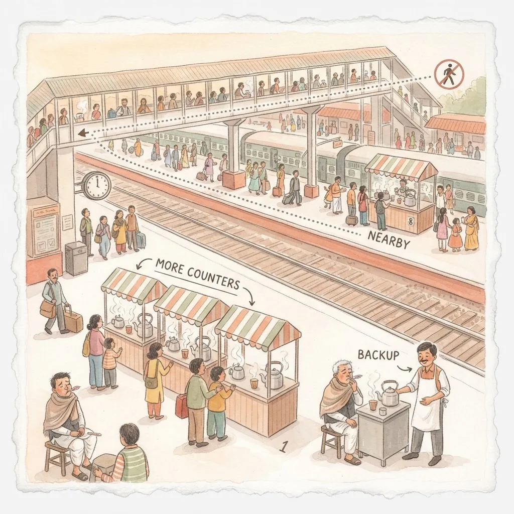
A single chai stall at a railway station. When the crowd grows (scalability), you open more counters. If the one tea-maker falls sick (fault tolerance), a second one keeps serving. If passengers are on platform 1 and platform 8 (latency), you put a counter on each platform so nobody walks across the bridge. Where it breaks: tea counters don't have to agree on anything; database copies must all show the same data, and that agreement is what the rest of Part II is about.
- Ch.1: reliability (faults vs failures) and scalability (load parameters, latency percentiles) are the words used here.
- Plates 2–4: the hardware choices; plate 5 onwards: replication.
Scaling up: one bigger machine (shared memory, shared disk)
If all you need is to handle more load, the simplest move is to buy a more powerful machine. This is called vertical scaling or scaling up. Many CPUs, RAM chips and disks are joined under one operating system, and a fast interconnect lets any CPU reach any part of memory or disk. This is a shared-memory architecture: all the parts behave like one single machine [1].
Footnote i: in a big machine, any CPU can reach any memory, but some memory banks are closer to one CPU than to others. This is NUMA (non-uniform memory access) [1]. To use it well, the work must be split so each CPU mostly touches nearby memory. So you still need partitioning, even on what looks like "one machine".
Problems with shared memory:
- Cost is super-linear. A machine with twice the CPUs, RAM and disk usually costs a lot more than twice as much.
- It doesn't scale linearly either. Because of internal bottlenecks, a machine twice the size can't necessarily handle twice the load.
- Limited fault tolerance. High-end machines have hot-swappable parts (you can replace disks, memory and even CPUs without switching off), but everything is still in one geographic place. A fire or power cut in that building takes it all down.
A second approach is the shared-disk architecture: several machines, each with its own CPUs and RAM, but all storing data on one shared array of disks connected by a fast network. (Footnote ii: this is NAS, network attached storage, or SAN, storage area network.) It is used for some data-warehousing workloads, but contention (machines fighting over the same disks) and the overhead of locking limit how far it scales [2].
Scale-up vs scale-out cost (modelled)
Modelled, not from the book: one small server costs 1 unit and handles 1 unit of load. A big machine of size k is priced at k1.6 units and delivers only k0.9 units of load (bottlenecks). Scale-out uses ⌈load⌉ small servers, plus 10% overhead for coordination. Only the shape (super-linear vs linear) is the book's point.
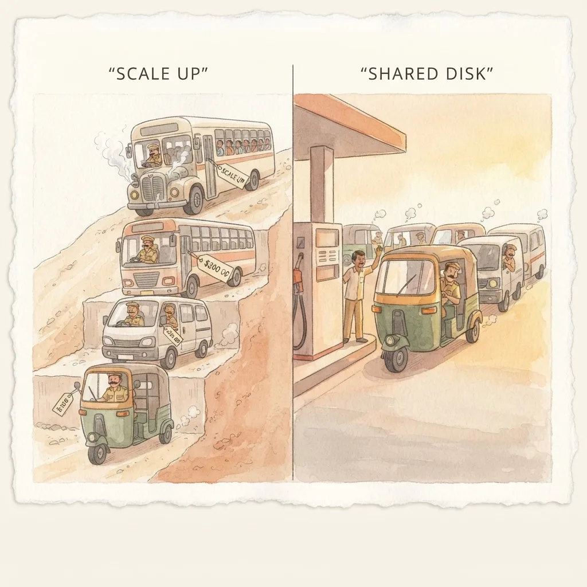
Scaling up is replacing your autorickshaw with a bus, then a bigger bus. Each step costs much more, and the biggest bus still breaks down in one place. Shared disk is several drivers sharing one fuel pump: they queue at the pump. Where it breaks: buses don't need to coordinate state; machines sharing a disk must lock data so they don't overwrite each other.
The "one machine" model is easy for software: memory is shared, locks are cheap, there is one clock. Every architecture after this trades some of that simplicity away. Shared disk keeps one copy of data but needs cross-machine locks; shared-nothing (next plate) gives up shared anything and coordinates over the network.
- Plate 3: the shared-nothing alternative, which the rest of Part II assumes.
- Ch.1 "Approaches for coping with load": scaling up vs scaling out.
Scaling out: many ordinary machines, coordinated in software
Shared-nothing architectures [3] (also called horizontal scaling or scaling out) have become very popular. Each machine or virtual machine running the database is a node. Every node uses its own CPUs, RAM and disks. Any coordination between nodes happens in software, over a normal network.
- No special hardware. Use whatever machines give the best price/performance.
- Spread across regions. You can put data in several geographic regions, lowering latency for users and possibly surviving the loss of a whole datacenter.
- Small companies can do it too. With cloud virtual machines, you don't need Google's scale: even small companies can run a multi-region system.
Part II focuses on shared-nothing. Not because it is always the best choice, but because it needs the most care from you, the application developer. When data lives on many nodes, you have to understand the limits and trade-offs; the database cannot magically hide them.
Shared-nothing usually adds complexity to applications and sometimes limits which data models you can use. In some cases a simple single-threaded program can beat a cluster with over 100 CPU cores [4]. Still, shared-nothing systems can be very powerful, and the next chapters dig into the problems that appear when data is distributed.
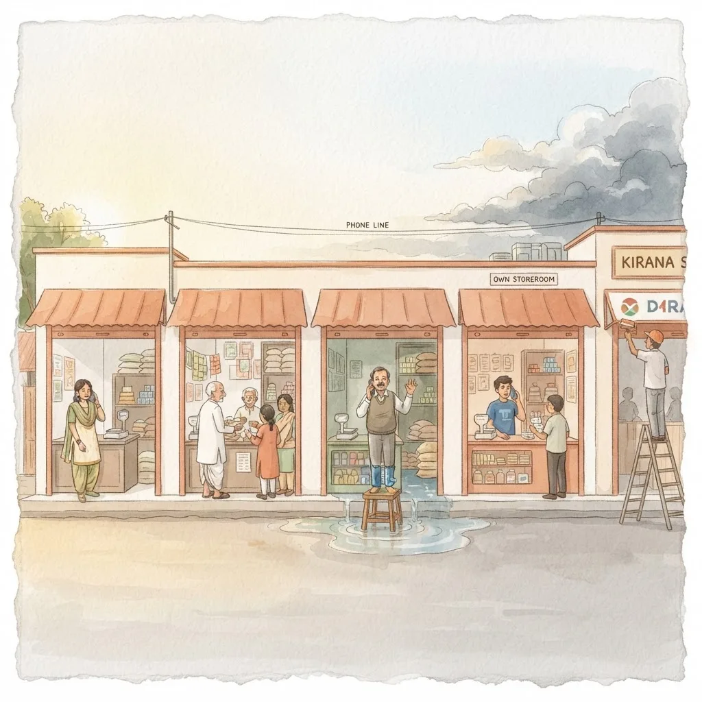
A franchise of kirana shops. Each shop has its own shopkeeper (CPU), its own counter (RAM) and its own storeroom (disk). They coordinate by phone (network). Opening another shop is cheap, and one shop flooding doesn't close the others. Where it breaks: the phone line can drop or be slow, and the shops can disagree about stock. Shared-nothing makes those problems yours to handle.
Nothing is shared, so nothing has to be locked across machines at the hardware level. The price is that every bit of agreement (who holds which data, which write came first, is that node alive?) must be done with messages over an unreliable network. That's why Chapters 8 and 9 exist.
Copies vs pieces: the two ways to distribute data
Data is spread over nodes in two common ways:
- Replication: keep a copy of the same data on several nodes, maybe in different places. It gives redundancy (if some nodes are down, the rest still serve the data) and can also improve performance. That's this chapter.
- Partitioning: split a big database into smaller subsets called partitions, and put different partitions on different nodes. Also called sharding. That's Chapter 6.
They are separate mechanisms, but they usually go together, as Figure II-1 shows.
Figure II-1, redrawn (click a box to knock it out)
Redrawn from the book's Figure II-1 (pdf p166): "A database split into two partitions, with two replicas per partition." The book's boxes hold famous texts keyed 136, 211, 377 (partition 1) and 629, 696, 858 (partition 2). There is no cropped PNG for this figure, so it is drawn here.
How to read this figure. Read across: the keys are split into two partitions (136–377 on the left, 629–858 on the right). Read down: each partition is stored twice ("copy of the same data"). Knock out one box and the data is still readable from its twin; knock out both replicas of one partition and half the keys vanish while the other half are fine.
After replication and partitioning, Part II covers the hard trade-offs: transactions in Chapter 7 (all the things that can go wrong and what to do about them), and the fundamental limits of distributed systems in Chapter 8 and Chapter 9. Part III will show how to combine several datastores into one larger system.
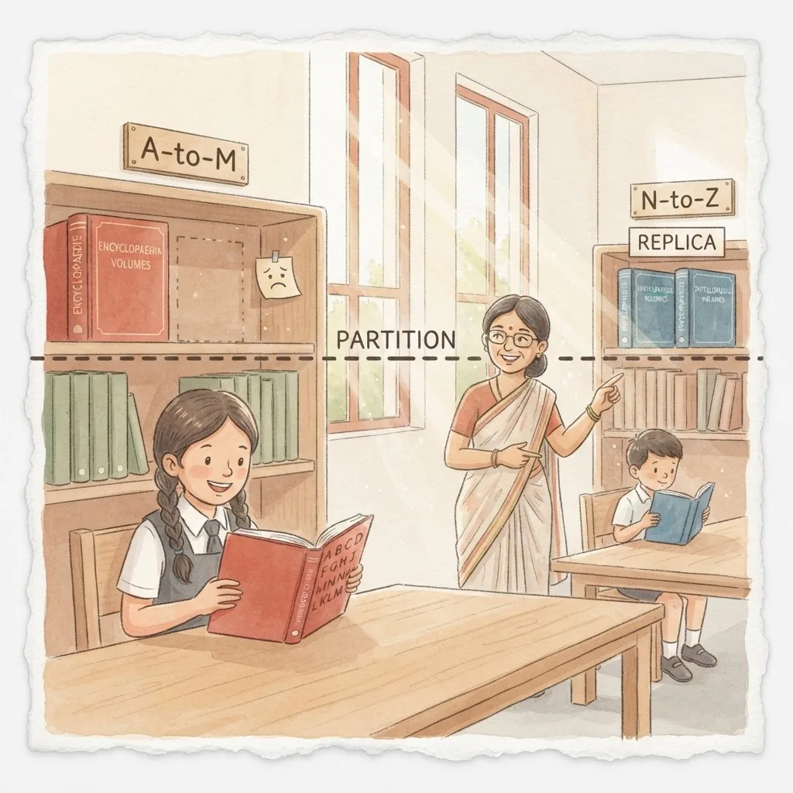
A school library with a 2-volume encyclopaedia. Partitioning = volume 1 (A–M) and volume 2 (N–Z) are on different shelves. Replication = the library keeps two copies of each volume. Lose one copy of volume 1 and students still read A–M from the other. Where it breaks: a printed book never changes; database copies change every second, and keeping both copies identical while they change is the whole challenge.
- Plate 5: this chapter assumes each node holds the whole dataset (no partitioning yet).
- Ch.6: how keys are split, rebalanced, and routed.
Replication: copying is easy, copying changes is hard
The chapter opens with Douglas Adams (Mostly Harmless, 1992): when a thing that "cannot possibly go wrong" goes wrong, it usually turns out to be impossible to get at or repair. A fitting warning for replication.
Replication means keeping a copy of the same data on several machines connected by a network. Why?
- To keep data geographically close to users → lower latency.
- To keep working when some parts have failed → higher availability.
- To have more machines that can answer read queries → higher read throughput.
Assumption for this chapter: the dataset is small enough that every machine holds a full copy. Chapter 6 drops that assumption (partitioning). Later chapters cover the kinds of faults a replicated system meets.
If the data never changes, replication is trivial: copy it to every node once, done. All the difficulty is in handling changes. The chapter covers three popular algorithms for replicating changes: single-leader, multi-leader and leaderless. Almost every distributed database uses one of these three.
There are many knobs: synchronous or asynchronous replication, how to handle failed replicas, and so on. These are often configuration options; the details vary by database but the principles are similar.
Replication is an old topic: the principles haven't changed much since they were studied in the 1970s [1], because the basic limits of networks haven't changed. But for a long time most developers assumed a database was one node, and distributed databases became mainstream only recently. So there is a lot of confusion about ideas like eventual consistency. Plates 11–15 make it precise, with the read-your-writes and monotonic reads guarantees.
Copying the data once is easy. Watch what happens when the data changes.
Timeline is modelled. Arrow length = time the message takes.
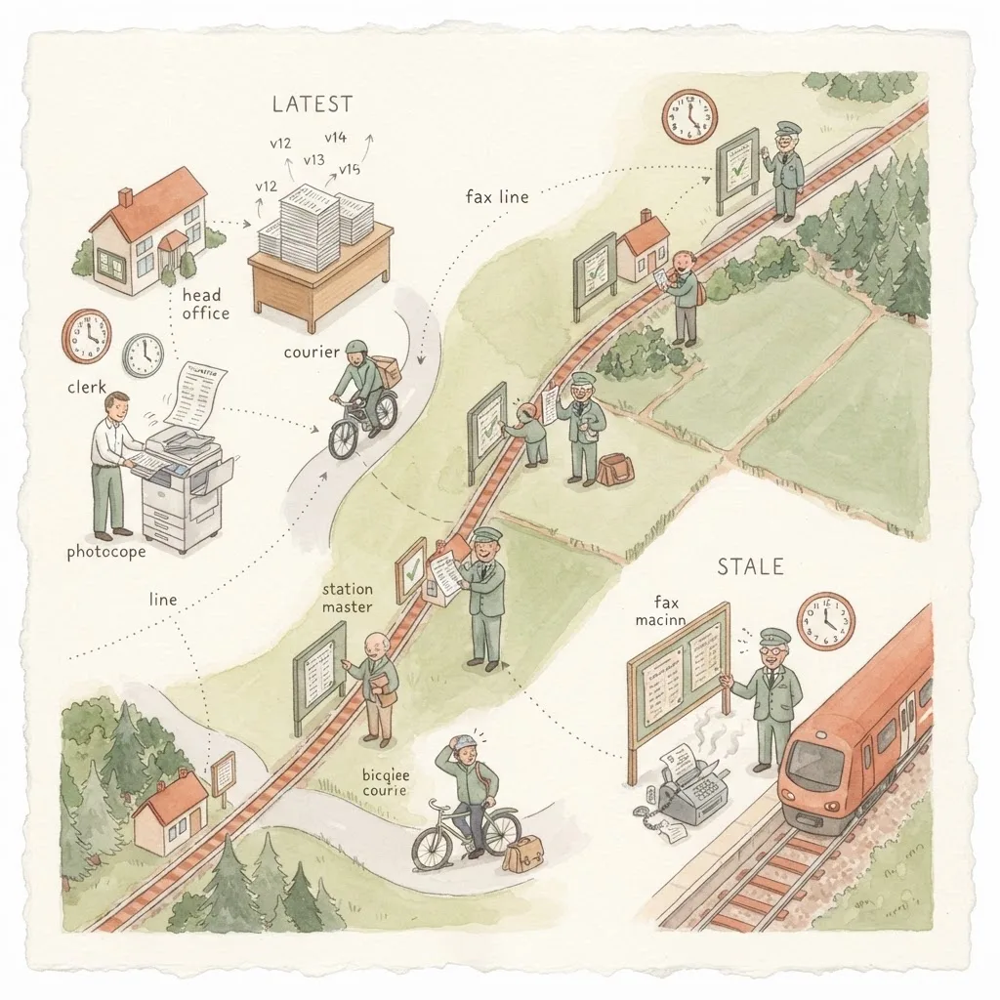
Photocopying a printed timetable for ten stations is easy: copy once, done. Now imagine the timetable changes every few minutes, and each station must always have the latest version, even if a courier is late or a station's fax is broken. That is replication. Where it breaks: a station with an old timetable can see the date on it; a database replica usually can't tell that its copy is old.
- Plates 6–10 single-leader; 16–22 multi-leader; 23–34 leaderless.
- Ch.9: stronger guarantees (linearizability) that go beyond eventual consistency.
One node takes the writes, the others copy it
Each node that stores a copy of the database is a replica. With several replicas, the question is: how do we make sure every write ends up on every replica? Every write must be processed by every replica, or they stop holding the same data.
The most common answer is leader-based replication (also called active/passive or master–slave replication):
- One replica is the leader (also master or primary). Clients that want to write must send the write to the leader, which first writes the new data to its own local storage.
- The other replicas are followers (also read replicas, slaves, secondaries or hot standbys). Whenever the leader writes something, it also sends the change to all followers as a replication log or change stream. Each follower applies the writes to its own copy in the same order the leader processed them.
- Reads can go to the leader or to any follower. But writes are accepted only on the leader; to clients, followers are read-only.
Footnote i: people define hot, warm and cold standby differently. In PostgreSQL, a hot standby is a replica that accepts reads from clients; a warm standby applies changes from the leader but serves no queries. For this book the difference doesn't matter.
This is built into many relational databases: PostgreSQL (since 9.0), MySQL, Oracle Data Guard [2] and SQL Server AlwaysOn Availability Groups [3]. Some non-relational ones use it too: MongoDB, RethinkDB, Espresso (LinkedIn) [4]. It isn't limited to databases: message brokers like Kafka [5] and RabbitMQ highly available queues [6] use it, and some network file systems and replicated block devices such as DRBD are similar.
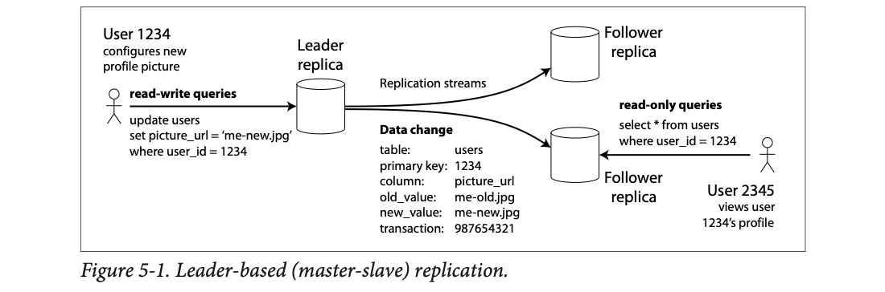
How to read this figure. Left: user 1234 changes their profile picture with an UPDATE users SET picture_url = 'me-new.jpg' WHERE user_id = 1234. That read-write query can only go to the leader. The leader turns it into a data change record (table users, primary key 1234, column picture_url, old value me-old.jpg, new value me-new.jpg, transaction 987654321) and pushes it down the two replication streams to the followers. Right: user 2345 viewing 1234's profile sends a read-only SELECT to a follower.
Try it: one leader, two followers
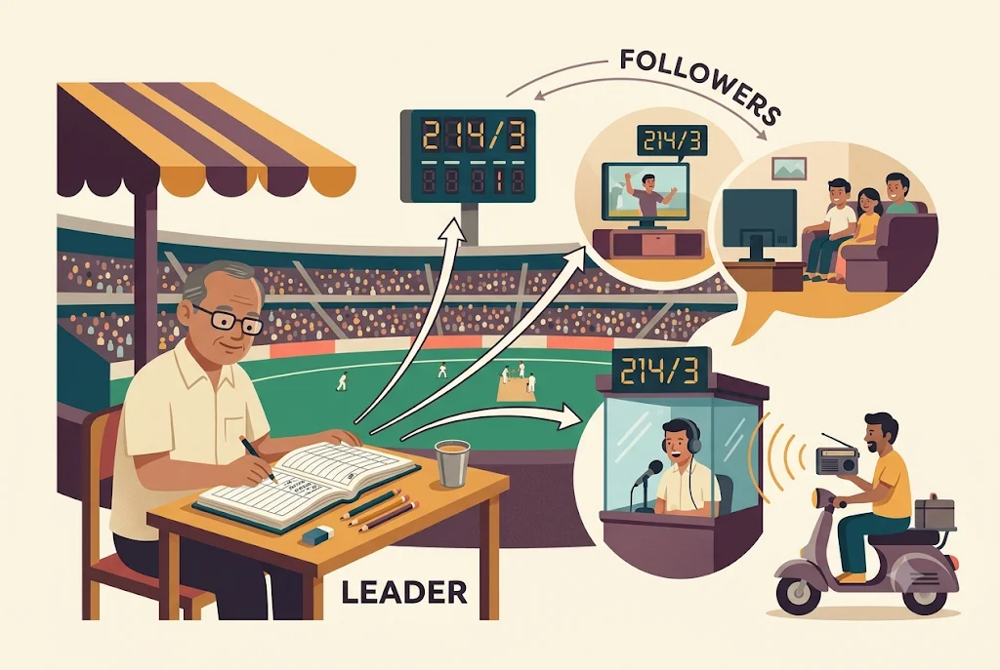
The official scorer at a cricket match is the leader: only they write runs into the scorebook. The stadium scoreboard, TV graphics and the radio commentator are followers: they copy the scorer's entries, in order, and fans read from whichever is nearest. If a fan shouts "add 4 runs!" at the scoreboard operator, nothing happens; only the scorer can change the score. Where it breaks: in cricket the copies are a few seconds behind and nobody minds; in a database, that delay is exactly what plates 11–15 worry about.
Because one node decides the order of all writes, every follower that applies the log in that order ends up in the same state. No two writes can conflict, because they were already serialised by the leader. That single ordering point is both the strength (simple, no conflicts) and the weakness (all writes depend on one node) of this design.
- Plate 10: what the "data change" record actually looks like (statement, WAL, logical row, trigger).
- Ch.11: change streams and change data capture.
Does the leader wait for the follower before saying "ok"?
An important detail: is replication synchronous or asynchronous? In relational databases it is often a setting; other systems are hard-wired to one or the other.
Go back to the profile-picture update. At some point the client sends the update to the leader; the leader receives it; at some point the leader forwards the change to the followers; and eventually the leader tells the client "success". Figure 5-2 draws this with time flowing left to right; each thick arrow is a request or response.
- Replication to follower 1 is synchronous: the leader waits until follower 1 confirms it received the write, and only then reports success to the user and makes the write visible to other clients.
- Replication to follower 2 is asynchronous: the leader sends the message but doesn't wait for a reply.
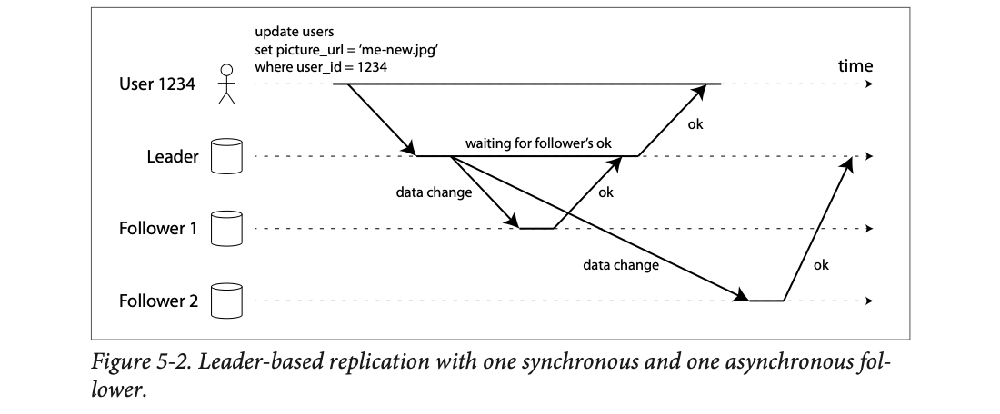
How to read this figure. Four horizontal timelines: user, leader, follower 1, follower 2. The user's arrow goes down to the leader. The leader sends "data change" to both followers. The flat stretch on the leader line labelled "waiting for follower's ok" is the synchronous wait: only after follower 1's "ok" comes back does the leader send "ok" to the user. Follower 2's change arrives much later (the long slanted arrow) and its "ok" comes back after the user already has their answer.
Replication is usually fast: most databases apply changes on followers in under a second. But there is no guarantee. Followers can fall minutes or more behind: when a follower is recovering from a failure, when the system runs near maximum capacity, or when there are network problems between nodes.
So making all followers synchronous is impractical: any one node outage would freeze the whole system. In practice, "enable synchronous replication" usually means one follower is synchronous and the rest are asynchronous. If the synchronous one becomes unavailable or slow, an asynchronous follower is made synchronous. This guarantees an up-to-date copy on at least two nodes (leader + one synchronous follower). This setup is called semi-synchronous [7].
Often leader-based replication is completely asynchronous. Then, if the leader fails and can't be recovered, any writes not yet copied to followers are lost. A write is not guaranteed to be durable even after the client was told "ok". The upside: the leader keeps accepting writes even if every follower has fallen behind.
Weakening durability sounds bad, but asynchronous replication is almost unavoidable with many followers or followers far apart geographically. (Plate 11 returns to this.)
Step through: one scenario, three settings
Timings are drawn for clarity (modelled), not measured.
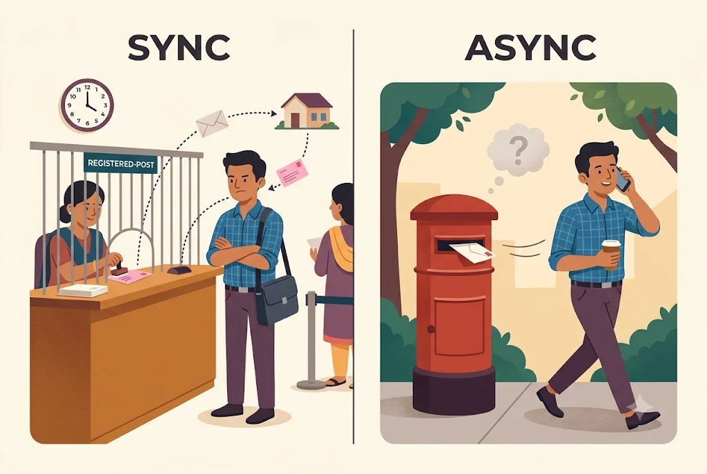
Synchronous is sending a document by registered post with acknowledgement: you don't tell your boss "sent" until the pink AD card comes back. If the post office is shut, you are stuck. Asynchronous is dropping it in a post box: you tell your boss "sent" right away, and usually it arrives, but if the van crashes the letter is gone even though you said "sent". Semi-synchronous: one copy by registered post, the rest by ordinary post. Where it breaks: a real AD card can take days; a database sync ack takes milliseconds, unless the follower is down, in which case it takes forever.
"Durable" means "survives a crash". With async replication, the moment of "ok" and the moment the data exists on a second machine are different moments, and anything in between is at risk. Sync replication closes that gap but makes your write latency equal to the slowest synchronous follower, and makes your availability depend on it. Semi-sync is a compromise: exactly one follower is in the critical path.
Leader + 2 followers, fully async, follower lag 800 ms (modelled). A user posts at t = 0 and gets "ok" at t = 5 ms. The leader's disk dies at t = 300 ms. Both followers are still 500 ms short of that write, so the post is gone, even though the user saw "ok". With semi-sync, "ok" only comes after follower 1 has it, so the promoted follower 1 still has the post.
- Plate 9: failover is where async data loss actually bites.
- Ch.9: chain replication and consensus give durability without one fragile sync follower.
- Beyond the book: PostgreSQL's
synchronous_standby_namesand MySQL's semi-sync plugin are how you choose this setting.
Adding a follower without stopping the database
Now and then you need a new follower: to add more replicas, or to replace a failed node. How do you make sure it gets an accurate copy of the leader's data?
Just copying the data files is usually not enough. Clients keep writing, so the data is always changing; a plain file copy would capture different parts of the database at different moments, and the result might not make sense. You could lock the database (no writes) to make the files consistent, but that defeats high availability. Luckily, it can usually be done without downtime:
- Take a consistent snapshot of the leader's database at some point in time, ideally without locking the whole database. Most databases can do this, because backups need it. Sometimes third-party tools are needed, such as innobackupex for MySQL [8].
- Copy the snapshot to the new follower.
- The follower connects to the leader and asks for all changes since the snapshot. This only works if the snapshot is tied to an exact position in the leader's replication log. PostgreSQL calls this position the log sequence number (LSN); MySQL calls it the binlog coordinates.
- When the follower has worked through that backlog, it has caught up. From then on it applies changes as they happen.
The real steps vary a lot between databases. Some automate it fully; in others it is a somewhat arcane multi-step workflow an administrator runs by hand.
Step through: snapshot + catch-up (log positions are modelled)

You join a coaching class in week 6. You photocopy a friend's notebook as it was on Friday evening and note "Friday = page 47" (the snapshot and its log position). Then you ask: "what was taught after page 47?" and copy that too (the backlog). Once you've caught up, you take notes live in class like everyone else. Where it breaks: if your friend kept writing while you were photocopying, some pages would be from Friday and some from Monday; a database snapshot is designed to be one consistent instant.
The snapshot and the log are two halves of one trick: "state at position P" + "every change after P" = "current state". This is the same idea as restoring a backup and replaying the WAL, and the same idea that powers change data capture and event sourcing later in the book.
Follower crash: catch up. Leader crash: failover.
Any node can go down: unexpectedly because of a fault, or just as likely for planned maintenance (for example, rebooting to install a kernel security patch). Being able to reboot single nodes without downtime is a big win for operations. The goal: keep the system as a whole running despite failed nodes, and keep the impact of an outage as small as possible.
Follower failure: catch-up recovery
Each follower keeps, on its local disk, a log of the changes it received from the leader. If it crashes and restarts, or the network between it and the leader breaks for a while, recovery is easy: from its log it knows the last transaction it processed. It reconnects and asks the leader for every change since then. Once applied, it has caught up and continues as before.
Leader failure: failover
Losing the leader is harder. A follower must be promoted to leader, clients must be reconfigured to send writes to it, and the other followers must start consuming changes from it. This is failover. It can be manual (an administrator is alerted and sets up the new leader) or automatic. Automatic failover usually goes:
- Decide the leader has failed. Many things can go wrong: crashes, power cuts, network problems. There is no foolproof way to know which one happened. So most systems use a timeout. Nodes keep sending small messages back and forth. If a node doesn't answer for some time, say 30 seconds, it is assumed dead. (Not needed if the leader is taken down on purpose for maintenance.)
- Choose a new leader. Either by election (a majority of the remaining replicas choose), or appointed by a previously elected controller node. The best candidate is usually the replica with the most up-to-date changes from the old leader, to lose as little as possible. Getting all nodes to agree on a new leader is a consensus problem (Chapter 9).
- Reconfigure the system to use the new leader. Clients send writes to the new leader (see "Request routing", Ch.6). If the old leader comes back, it may still think it is the leader; the system must make sure it becomes a follower and accepts the new leader.
Failover is full of things that can go wrong:
- Lost async writes. With asynchronous replication the new leader may not have all of the old leader's writes. If the old leader rejoins, what happens to those writes? The new leader may have accepted conflicting writes meanwhile. The usual answer is to discard the old leader's unreplicated writes, which can break clients' durability expectations.
- Discarding is dangerous when other systems depend on the data. In one GitHub incident [9], an out-of-date MySQL follower was promoted. The database used an auto-incrementing counter for primary keys; the new leader's counter was behind, so it re-used primary keys the old leader had already handed out. Those keys were also used in a Redis store, so MySQL and Redis became inconsistent, and some private data was shown to the wrong users.
- Split brain. In some faults (Ch.8), two nodes can both believe they are the leader. If both accept writes with no conflict resolution (plate 19), data is likely lost or corrupted. As a safety catch, some systems shut down one node when two leaders are detected (footnote ii: this is fencing, or more emphatically STONITH, "Shoot The Other Node In The Head"). If you're unlucky, both nodes get shut down [10].
- What timeout? A long timeout means a long recovery when the leader really dies. A short one causes unnecessary failovers: a temporary load spike can push response time above the timeout, or a network glitch can delay packets. If the system is already struggling with high load or network trouble, an unnecessary failover makes things worse.
There are no easy fixes, which is why some operations teams prefer manual failover even when the software supports automatic. These issues (node failures, unreliable networks, trade-offs between consistency, durability, availability and latency) are fundamental to distributed systems; Chapters 8 and 9 go deeper.
Step through a failover (and what goes wrong)
Pick a timeout (modelled)
Modelled: assumes a real crash is noticed after exactly the timeout and an election takes 5 s; a pause longer than the timeout is treated as a death. The book gives only "say, 30 seconds" and the trade-off, not numbers.
Each box is one change in the replication log, numbered by log position.
Log positions are modelled.
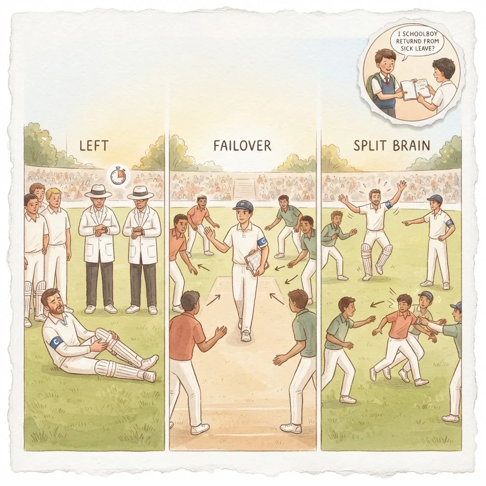
A follower crash is a student back from sick leave: "the last notes I have are from the 12th, please give me everything after that." Leader failover is the captain getting injured mid-match: the umpires must decide he's really off (timeout), the team picks the vice-captain who knows the field plan best (most up-to-date replica), and everyone must now take signals from the new captain (reconfigure). Split brain is the old captain walking back on and both of them setting the field at once. Where it breaks: on a cricket field everyone can see the captain; in a datacenter, "is the leader dead or just slow?" is only a guess from a timeout.
Followers can recover alone because the leader's log tells them exactly what they missed. A leader's crash leaves a decision to make, and decisions among nodes that can't trust the network are consensus. Every failover danger here (lost writes, reused keys, two leaders, false alarms) is a symptom of nodes not knowing for sure what other nodes know.
What exactly does the leader send? Four formats.
How does leader-based replication work underneath? Several methods are used in practice.
Statement-based replication
The simplest: the leader logs every write statement it executes and sends that log to followers. For a relational database, every INSERT, UPDATE or DELETE is forwarded and each follower parses and runs the SQL as if a client had sent it. It sounds reasonable, but breaks in several ways:
- Non-deterministic functions like
NOW()(current date and time) orRAND()(random number) will probably give a different value on each replica. - Statements that use an auto-incrementing column, or depend on existing data (e.g.
UPDATE … WHERE <some condition>), must run in exactly the same order on every replica, or they have different effects. That is limiting when many transactions run concurrently. - Statements with side effects (triggers, stored procedures, user-defined functions) may cause different side effects on each replica unless those are fully deterministic.
Workarounds exist (for example, the leader can replace NOW() with a fixed value when logging), but there are so many edge cases that other methods are now generally preferred. MySQL used statement-based replication before version 5.1. It is still sometimes used because it is compact, but by default MySQL now switches to row-based replication if a statement has any non-determinism. VoltDB uses statement-based replication and makes it safe by requiring transactions to be deterministic [11].
Write-ahead log (WAL) shipping
Chapter 3 showed that storage engines usually append every write to a log:
- In a log-structured engine (SSTables and LSM-trees), the log is the main storage; segments are compacted and garbage-collected in the background.
- In a B-tree, which overwrites disk blocks, every change is first written to a write-ahead log (WAL) so the index can be restored to a consistent state after a crash.
Either way, the log is an append-only sequence of bytes with all writes. The leader can send that exact log to followers; by processing it, a follower builds an exact copy of the same data structures. PostgreSQL and Oracle do this, among others [12].
The downside: the WAL describes data at a very low level: which bytes changed in which disk block. Replication is then tightly coupled to the storage engine. If the storage format changes between versions, you usually can't run different versions on leader and followers. That has a big operational effect: if followers could run a newer version, you could do a zero-downtime upgrade (upgrade followers first, then fail over to an upgraded one). If the protocol forbids the mismatch, as WAL shipping often does, upgrades need downtime.
Logical (row-based) log replication
Alternative: use different log formats for replication and for storage. Then the replication log is decoupled from storage internals. This is a logical log (as opposed to the storage engine's physical representation). For a relational database it is usually a sequence of records describing writes at the granularity of a row:
- Inserted row: the new values of all columns.
- Deleted row: enough to uniquely identify the row, usually the primary key; if the table has no primary key, the old values of all columns.
- Updated row: enough to identify the row, plus the new values of all columns (or at least of the changed ones).
A transaction that changes several rows produces several records, then a record saying it committed. MySQL's binlog (in row-based mode) works this way [13]. Because it is decoupled from storage internals, it can be kept backwards-compatible, so leader and follower can run different versions or even different storage engines. It is also easier for external applications to parse, useful for sending data to a data warehouse, or building custom indexes and caches [14]. This is change data capture (Chapter 11).
Trigger-based replication
All the above are done by the database, with no application code. Sometimes you need more flexibility: replicate only a subset of the data, replicate from one kind of database to another, or add conflict resolution logic (plate 19). Then replication moves up to the application layer. Some tools, such as Oracle GoldenGate [15], do it by reading the database log. Another way is triggers and stored procedures: a trigger registers custom code that runs automatically when data changes. It can log the change into a separate table, from which an external process reads it, applies any application logic, and replicates it to another system. Databus for Oracle [16] and Bucardo for Postgres [17] work like this. Trigger-based replication usually has more overhead and is more prone to bugs and limitations than built-in replication, but its flexibility can be worth it.
The same write, four ways on the wire
The client runs: UPDATE users SET last_seen = NOW(), visits = visits + 1 WHERE user_id = 1234
Byte offsets, page numbers and LSNs in the WAL view are invented for illustration (modelled), not a real PostgreSQL record layout.
| Method | What is sent | Good | Bad | Book's examples |
|---|---|---|---|---|
| Statement | SQL text | compact | NOW(), RAND(), order-dependence, side effects | MySQL < 5.1, VoltDB |
| WAL shipping | bytes changed in disk blocks | exact copy, no extra log | tied to storage format → no mixed versions, upgrades need downtime | PostgreSQL, Oracle |
| Logical / row | row inserts, deletes, updates + commit | version-independent, easy to parse (CDC) | an extra log to write | MySQL binlog (row mode) |
| Trigger | whatever your code writes to a changes table | flexible: subsets, cross-DB, custom conflict logic | overhead, bugs, limits | Databus, Bucardo (GoldenGate reads the log) |
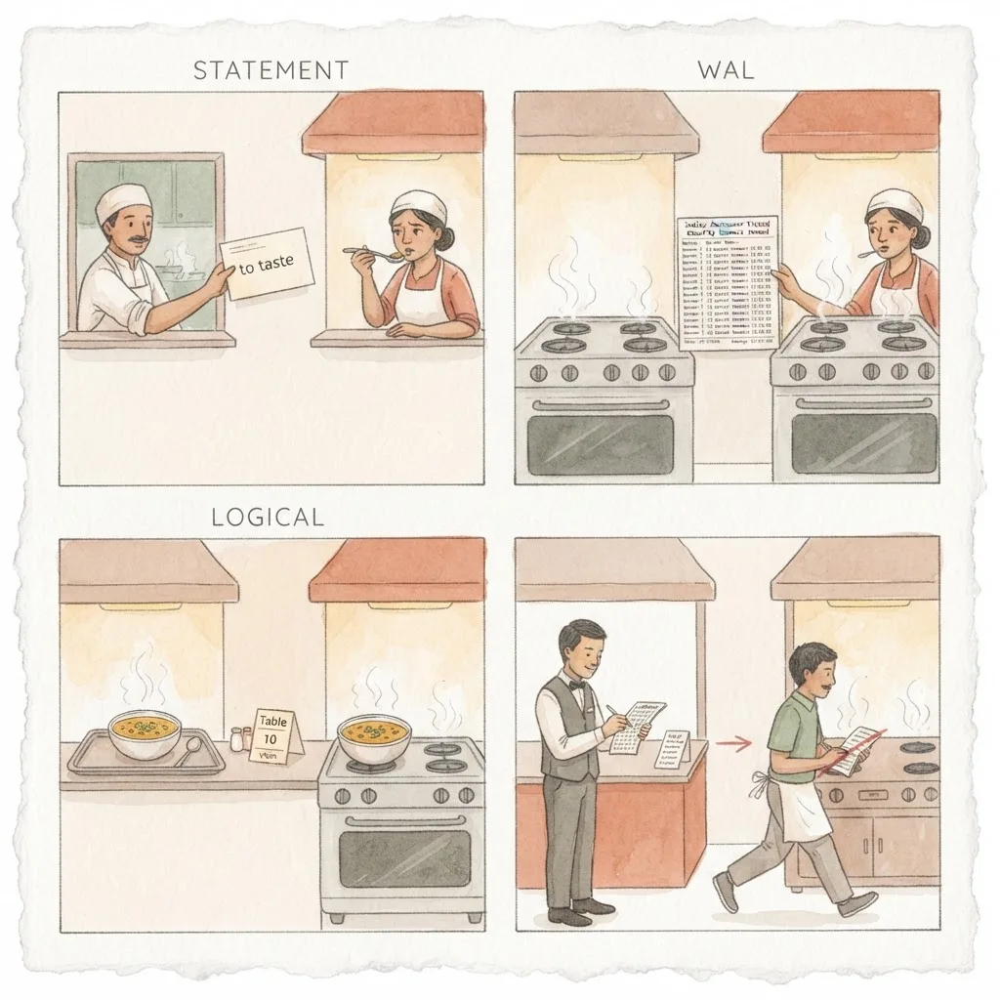
You want a second kitchen to cook exactly what the first one cooked. Statement: send the recipe card ("add salt to taste") and hope both cooks taste the same. WAL: send a CCTV-level record ("2.3 g salt into the pot on burner 3 at 7:02") which only works if the second kitchen has the same burners. Logical: send the result ("dal for table 12: salted, 400 ml") which any kitchen can reproduce. Trigger: a waiter writes every order into a register and a runner carries the register to the other kitchen, able to skip or translate items on the way. Where it breaks: the kitchens never need byte-identical dal; databases do.
The further the log is from the storage engine's bytes, the more freedom you get (mixed versions, other consumers) and the more work you do (an extra log to produce). The closer it is to the intent (SQL), the more you depend on every replica re-computing the same answer, which non-determinism breaks.
Read scaling works, but followers can be behind
Surviving node failures is only one reason for replication. The others are scalability (more requests than one machine can handle) and latency (replicas near users).
In leader-based replication all writes go to one node, but read-only queries can go to any replica. Many web workloads are mostly reads with a small share of writes. So there is a tempting design: create many followers and spread reads across them. That takes load off the leader and lets a nearby replica serve each read. This is a read-scaling architecture: to serve more reads, just add followers.
But it only really works with asynchronous replication. With synchronous replication to all followers, one node failure or network outage would stop all writes. And the more nodes you have, the more likely one is down, so fully synchronous would be very unreliable.
With async followers, an application may read outdated data from a follower that has fallen behind. Run the same query on the leader and a follower at the same moment and you may get different answers. This inconsistency is temporary: stop writing, wait a while, and the followers eventually catch up. This is called eventual consistency [18, 19].
Footnote iii: the term eventual consistency was coined by Douglas Terry et al. [20], popularised by Werner Vogels [18], and became the battle cry of many NoSQL projects. But it's not just NoSQL: followers in an asynchronously replicated relational database behave exactly the same way.
"Eventually" is deliberately vague: in general there is no limit to how far a replica can fall behind. Normally the delay between a write on the leader and its appearance on a follower, the replication lag, is a fraction of a second and nobody notices. But if the system is near capacity or the network has problems, lag can grow to several seconds or minutes. Then the inconsistencies are not theoretical; they are real problems for applications. The next three plates are three such problems and how to address them.
See the lag (modelled numbers)
Modelled: follower 1 lags 0.5 × normal, follower 2 lags 1 ×, follower 3 lags 2 × (or 120 × with the checkbox). The sliders go up to 1 s and 10 s.
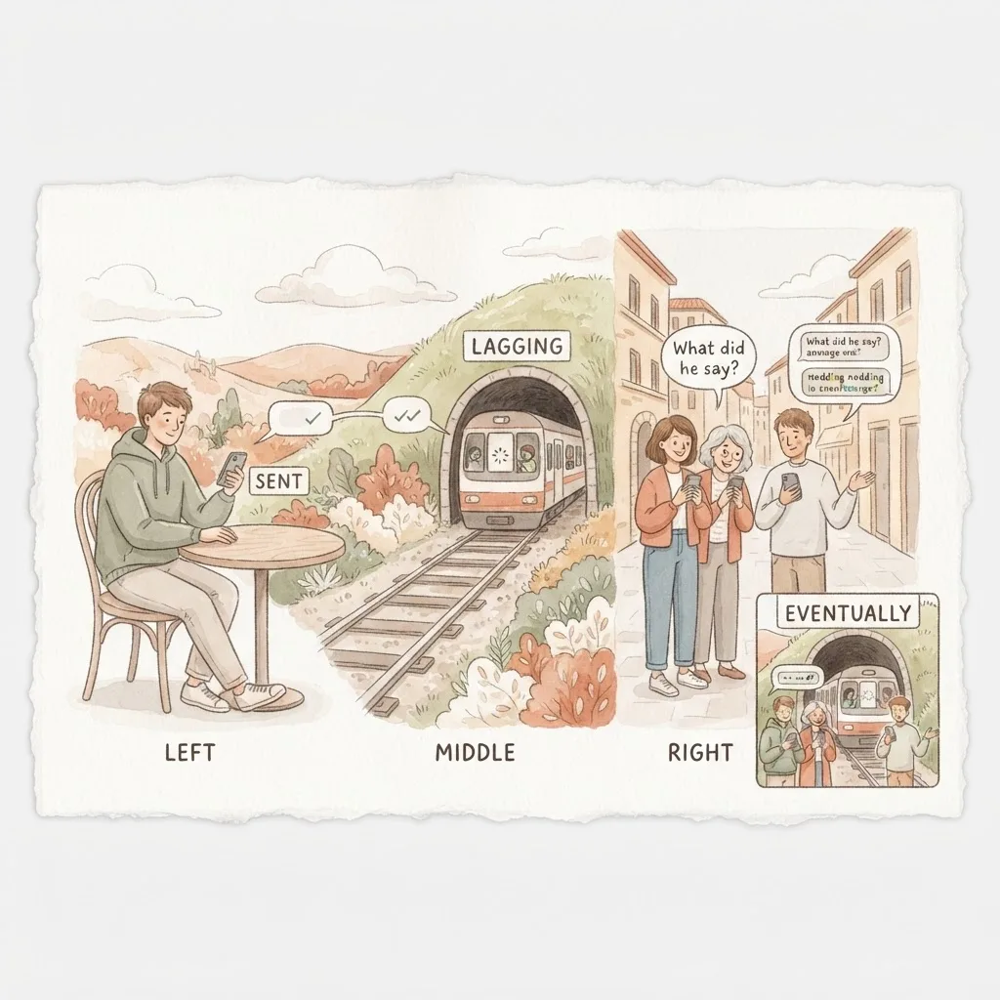
A blue tick on WhatsApp vs your friend's phone that is in a tunnel: the message is "sent" (on the leader), but some phones haven't received it yet. Ask two friends "what did he say?" at the same moment and you get two answers. Wait until everyone is out of the tunnel and they all agree: that's "eventually". Where it breaks: nobody can tell you how long the tunnel is.
The leader has a log position (say write #1000); each follower has its own position (#998, #1000, #940). Anything between a follower's position and the leader's is invisible on that follower. Eventual consistency only promises the gap closes if writes stop; it says nothing about how wide the gap is right now.
Why read scaling must be asynchronous: say each machine is up 99.9% of the time, independently. With 1 leader + 10 synchronous followers, a write needs all 11 machines up: 0.99911 ≈ 98.9%, so writes fail about 96 hours a year instead of about 9. With 100 followers it is 0.999101 ≈ 90.4%. With asynchronous followers, writes need only the leader (99.9%), and reads have 11 places to go. The price is lag: a follower that is 2 s behind answers with 2-second-old data.
- Plates 12–14: three specific anomalies.
- Plate 27: measuring lag as "leader position − follower position".
- Ch.9: linearizability, the strong opposite of eventual consistency.
"I just posted it. Where did it go?"
Many apps let a user submit something and then look at it: a customer record, a comment on a thread. New data must go to the leader, but viewing can be served by a follower; that makes sense when data is viewed often and written rarely.
With async replication there is a problem (Figure 5-3): if the user looks right after writing, the new data may not have reached the replica yet. To the user it looks like their data was lost, and they'll be unhappy.
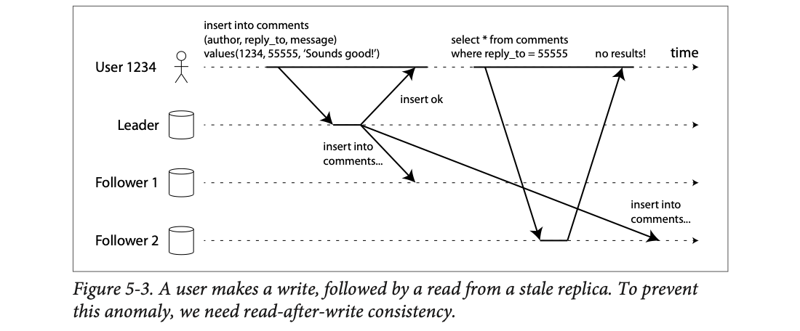
How to read this figure. User 1234 inserts the comment "Sounds good!" (author 1234, reply_to 55555) on the leader and gets "insert ok". The leader forwards the insert to both followers; follower 1 gets it quickly, but the arrow to follower 2 is long and slow. The user's next query, SELECT * FROM comments WHERE reply_to = 55555, happens to go to follower 2 before the insert arrives there, so it returns "no results!". The two arrows crossing on follower 2's line is the whole bug.
We need read-after-write consistency, also called read-your-writes consistency [20]: if the user reloads the page, they will always see the updates they submitted themselves. It promises nothing about other users' updates, which may appear later. It just reassures the user their own input was saved.
Ways to implement it with leader-based replication:
- Read things the user may have modified from the leader, everything else from followers. You need a way to know what might have been modified without querying it. Example: on a social network, a profile is normally editable only by its owner. Simple rule: always read the user's own profile from the leader, and other people's profiles from a follower.
- If most things in the app are editable by the user, that rule sends most reads to the leader and kills read scaling. Use other criteria: track the time of the last update and, for one minute after it, read everything from the leader. Or monitor replication lag and don't query any follower more than one minute behind the leader.
- The client can remember the timestamp of its most recent write; the system then makes sure the replica serving that user's reads has applied updates at least up to that timestamp. If not, another replica handles it, or the query waits until the replica catches up. The timestamp can be logical (something that orders writes, like the log sequence number) or the actual system clock, in which case clock synchronisation becomes critical (see "Unreliable Clocks", Ch.8).
- If replicas are spread over several datacenters (for nearness to users or for availability), it gets harder: any request that must be served by the leader has to be routed to the datacenter that holds the leader.
Another complication: the same user on several devices, say a desktop browser and a mobile app. You may want cross-device read-after-write consistency: enter something on one device, see it on the other. Extra issues:
- Remembering the timestamp of the user's last update gets harder, because code on one device doesn't know what happened on the other. That metadata must be centralised.
- With replicas in different datacenters, there is no guarantee both devices are routed to the same datacenter. (A desktop on home broadband and a phone on mobile data may take completely different network routes.) If your approach requires reading from the leader, you may first have to route all of a user's devices to the same datacenter.
Simulator: will the user see their own comment? (modelled)
Modelled: 3 followers with lags 0.25×, 1× and 2.5× the lag scale. "Stale chance" is the share of followers that haven't got the comment yet when the read arrives.

You pay a shopkeeper by UPI, your bank app says "₹200 paid", you refresh the passbook screen and the payment isn't there. Panic. The money is fine; the screen just read from a server that hadn't caught up. Read-your-writes says: whatever you did, you must see. The shopkeeper seeing it a few seconds later is acceptable. Where it breaks: a bank usually has stronger guarantees than this; the analogy is about the feeling, not how banks are built.
Every fix is about pairing a read with a replica that is at least as new as the user's last write. Either you pick a replica that's certainly new enough (the leader), or you carry a "minimum position" with the read and check it. The multi-device and multi-datacenter cases are hard because that "minimum position" lives on one device or in one datacenter.
Follower lags (modelled): 0.5 s, 2 s, 5 s. User reloads 1 s after posting. Random follower: 2 of 3 replicas don't have it → 67% chance the comment "vanishes". "Remember position": only follower 1 is caught up, so the read goes there (or waits ≤ 1 s on another). "Own data from leader": 0% chance, at the price of the leader serving every user's own-profile reads.
Refresh, and the comment disappears again
Second anomaly with async followers: a user can see things moving backwards in time. This happens when a user makes several reads from different replicas. In Figure 5-4, user 2345 runs the same query twice: first on a follower with little lag, then on one with more lag. (Very likely if the user refreshes a page and each request goes to a random server.) The first read shows a comment user 1234 just added; the second shows nothing, because the lagging follower hasn't got that write yet.
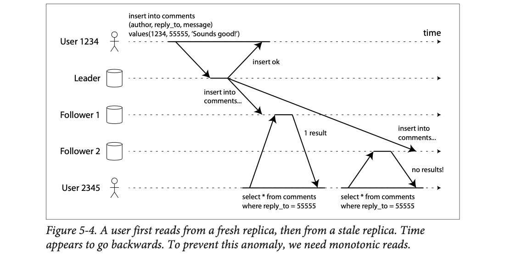
How to read this figure. Top: user 1234 inserts the comment on the leader; the leader replicates fast to follower 1 and slowly to follower 2. Bottom: user 2345's first SELECT goes up to follower 1 (after it got the insert) and returns "1 result". The second SELECT goes to follower 2, which still hasn't received the insert, and returns "no results!". The second query observes the system at an earlier point in time than the first.
It wouldn't be so bad if the first query had also returned nothing; user 2345 wouldn't know a comment existed. What's confusing is seeing it appear and then disappear.
Monotonic reads [19] is the guarantee that this doesn't happen. It is weaker than strong consistency but stronger than eventual consistency. You may still read an old value; it only promises that if one user makes several reads in sequence, they won't see time go backwards, i.e. they won't read older data after having read newer data.
One way: make each user always read from the same replica (different users can use different replicas). For example, choose the replica by a hash of the user ID instead of randomly. (If that replica fails, the user's queries must be rerouted to another one.)
Simulator: refresh the page (modelled lags)
Modelled: the comment is written at t = 0. Follower A gets it at t = 0.3 s, follower B at t = 4 s. Each refresh is 0.5 s after the previous one. ✓ = comment visible, ✗ = not visible, ↩ = time went backwards.
The same story as Figure 5-4, but user 2345 is always sent to one replica.
Timeline is modelled.
Checking a live cricket score on two apps. App 1 says India 150/3. You refresh and get App 2, which says 142/2. A wicket "un-fell". Monotonic reads is like always opening the same app: it may be a few balls behind, but the score never goes backwards. Where it breaks: if that one app's server goes down, you have to switch, and the guarantee needs care at that moment.
A single replica applies the log in order, so its state only moves forward. Reading from one replica, you only ever see forward motion. Jumping between replicas means jumping between different log positions, which can be backwards.
- Plate 12: read-your-writes is about your own writes; monotonic reads is about not going back in time.
- Ch.6: hashing keys to nodes is the same trick as hashing user IDs to replicas.
The answer arrives before the question
Third anomaly: violating causality. A short dialogue between Mr Poons and Mrs Cake (from Terry Pratchett's Reaper Man [21]):
Mrs Cake: About ten seconds usually, Mr Poons.
There is a causal relationship: Mrs Cake heard the question and answered it. Now a third person listens through followers. Mrs Cake's words go through a follower with little lag; Mr Poons' words go through one with more lag. The observer hears:
Mr Poons: How far into the future can you see, Mrs Cake?
To the observer, Mrs Cake answers before the question is even asked. Impressive psychic powers, but very confusing [21].
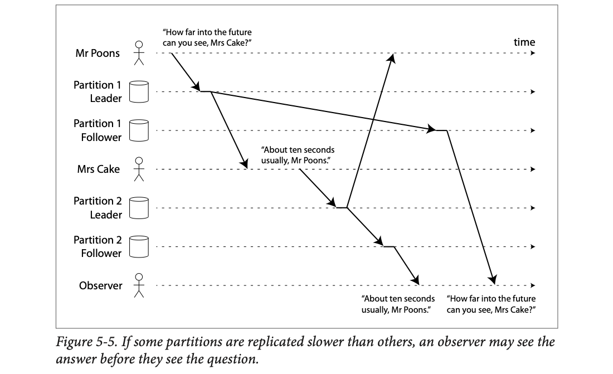
How to read this figure. Mr Poons' question goes to the partition 1 leader, which forwards it to Mrs Cake (she hears it) and, slowly, to the partition 1 follower. Mrs Cake's answer goes to the partition 2 leader and quickly to the partition 2 follower. The observer reads from the two followers: the answer arrives first (short arrows on the right of partition 2), the question later (the long arrow through partition 1's follower).
Preventing this needs another guarantee: consistent prefix reads [19]. If a sequence of writes happens in a certain order, anyone reading those writes sees them appear in the same order.
This is mostly a problem in partitioned (sharded) databases (Chapter 6). If the database always applied writes in one order, reads would always see a consistent prefix and this couldn't happen. But in many distributed databases, partitions work independently, so there is no global order of writes: a reader may see some parts of the database in an older state and some in a newer one.
One fix: make sure writes that are causally related go to the same partition; but in some applications that can't be done efficiently. In general, consistent prefix reads need a kind of distributed transaction with a guarantee such as snapshot isolation (Chapter 7). (Beyond the book, for this edition: there are also algorithms that explicitly track causal dependencies; the "happens-before" idea in plate 31 is the starting point for them.)
Simulator: what does the observer hear? (modelled)
Modelled: Mr Poons speaks at t = 0 s, Mrs Cake hears it and replies at t = 1 s. With "one partition", both go through partition 1's leader and follower, in order.
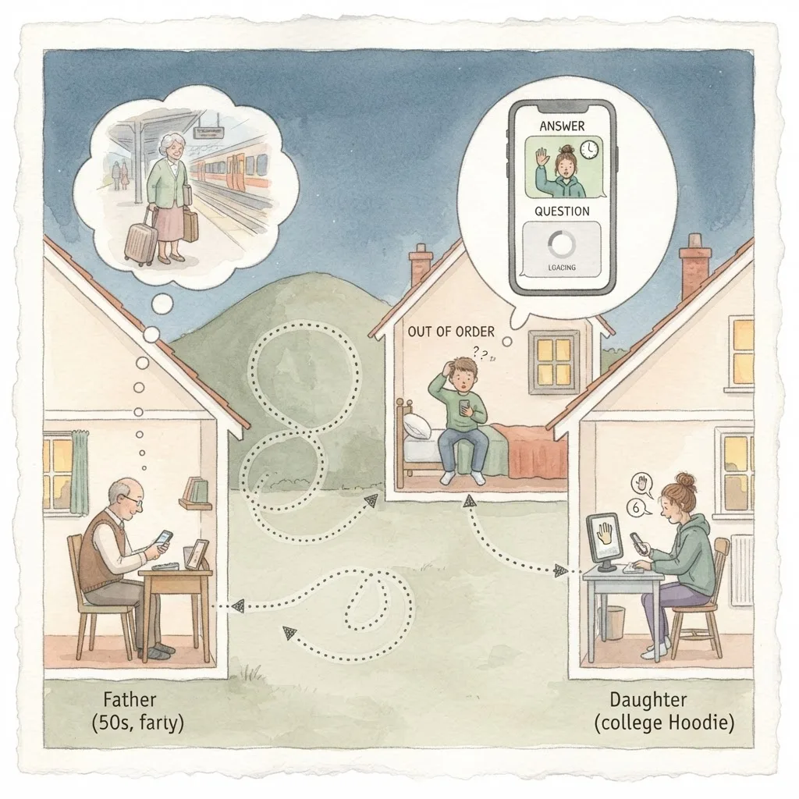
A family WhatsApp group where Papa asks "Who's picking up Dadi from the station?" and Didi replies "I will, at 6". If your phone receives Didi's reply first, you read "I will, at 6" with no idea what it means. Where it breaks: WhatsApp actually orders messages within a chat (it's like one partition). The problem appears when the question and answer live on different "servers" that each deliver at their own speed.
Within one partition, the leader's log gives a total order, and followers replay a prefix of it. Across partitions there are two logs and no shared order, so "the first 10 writes" is not a meaningful idea. A reader combining a fast prefix from one log with a slow prefix from another sees an impossible mix.
Design for "lag = several minutes", or get a stronger guarantee
With an eventually consistent system, ask: how does my app behave if replication lag grows to several minutes or even hours? If the answer is "no problem", great. If it's a bad user experience, design the system to give a stronger guarantee, such as read-after-write. Pretending replication is synchronous when it is actually asynchronous is a recipe for problems later.
As shown above, the application can provide stronger guarantees than the database underneath, for example by doing certain reads on the leader. But that adds complexity to the application and is easy to get wrong.
It would be better if developers didn't have to worry about these subtle issues and could just trust the database to "do the right thing". That's why transactions exist: they let a database give stronger guarantees so the application can be simpler.
Single-node transactions have existed for a long time. But in the move to distributed (replicated and partitioned) databases, many systems dropped them, claiming transactions are too expensive in performance and availability, and that eventual consistency is unavoidable in a scalable system. Kleppmann says that is not necessarily true; Chapter 7 returns to it.
| Guarantee | Promise (in one line) | Typical fix in the book |
|---|---|---|
| Eventual consistency | If writes stop, replicas converge "eventually" (no time limit). | nothing extra |
| Read-after-write (read-your-writes) | You always see your own writes. | read own data from leader; leader for 1 min after a write; remember last-write timestamp |
| Monotonic reads | Your later reads are never older than your earlier ones. | same replica per user (hash of user ID) |
| Consistent prefix reads | Writes are seen in the order they happened. | causally related writes in one partition; distributed transactions (snapshot isolation) |
Go feature by feature: what does the user see if lag grows from 0.2 s to 5 minutes?
Lag values and counts are modelled.
Planning a wedding assuming every relative replies on WhatsApp within a minute is fine until Mama-ji's phone is off for three days. A good planner asks "what if someone replies in three days?" and has a plan for it. Where it breaks: a database can't phone Mama-ji; it can only route, wait, or refuse.
Let more than one node accept writes
So far: single-leader replication. It is common, but there are interesting alternatives.
Leader-based replication has one big weakness: there is only one leader and every write must go through it. If you can't reach the leader for any reason (say, a network break between you and it), you can't write.
Footnote iv: if the database is partitioned (Chapter 6), each partition has one leader. Different partitions may have their leaders on different nodes, but each partition still has exactly one leader node.
The natural extension: allow more than one node to accept writes. Replication works the same way: each node that processes a write forwards the change to all other nodes. This is a multi-leader configuration (also master–master or active/active replication). Each leader also acts as a follower of the other leaders.
Two leaders, each in its own datacenter, with a client on each side.
Timeline is modelled; order numbers are invented.
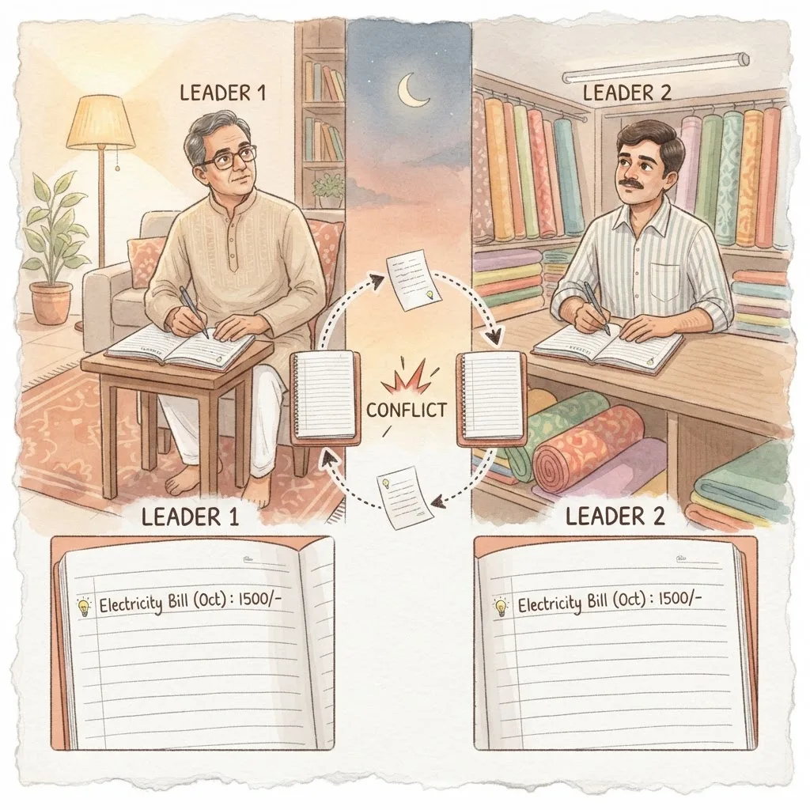
A joint family's shared expense notebook, but Papa keeps one copy at home and Chacha keeps another at his shop. Both write entries in their own copy, and every evening they read each other's new entries and copy them across. Where it breaks: when both write "paid electricity bill" for the same month, someone has to sort it out; with a single notebook that couldn't happen.
- Plates 17–18: when this is worth it. Plates 19–21: the conflict problem it creates. Plate 22: how leaders are wired together.
A leader in every datacenter
Multi-leader rarely makes sense inside one datacenter: the benefits rarely outweigh the added complexity. But some situations justify it.
Imagine replicas in several datacenters (to survive losing a whole datacenter, or to be closer to users). With normal leader-based replication the leader sits in one datacenter and every write must go through it. With multi-leader, you can have a leader in each datacenter. Inside each datacenter, normal leader–follower replication; between datacenters, each leader replicates its changes to the leaders in the other datacenters.
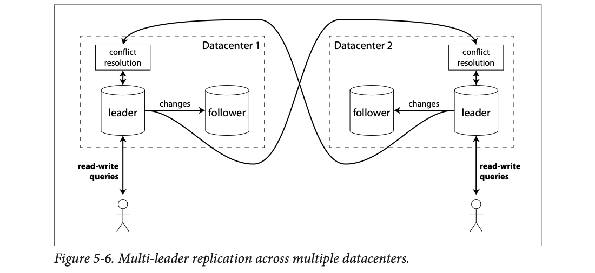
How to read this figure. Two dashed boxes = two datacenters. In each, users send read-write queries to the local leader, which sends "changes" to its local follower. The long curved lines that cross in the middle carry each leader's changes to the other datacenter's leader. Before an incoming change is applied, it passes through a conflict resolution box, because the other side may have changed the same data.
Single-leader vs multi-leader in a multi-datacenter deployment:
| Single-leader | Multi-leader | |
|---|---|---|
| Performance | Every write crosses the internet to the leader's datacenter. Adds significant write latency, maybe defeating the point of having several datacenters. | Every write is processed in the local datacenter and replicated asynchronously. The inter-datacenter delay is hidden from users, so perceived performance may be better. |
| Datacenter outage | If the leader's datacenter fails, failover promotes a follower in another datacenter. | Each datacenter keeps working independently; replication catches up when the failed one returns. |
| Network problems | Inter-datacenter traffic goes over the public internet, less reliable than a local network. Very sensitive to that link, because writes are made synchronously over it. | Asynchronous replication usually tolerates network problems better: a temporary break doesn't stop writes. |
Some databases support multi-leader by default; often it's added by external tools such as Tungsten Replicator for MySQL [22], BDR (Bi-Directional Replication) for PostgreSQL [23], and GoldenGate for Oracle [15].
The big downside: the same data may be changed concurrently in two datacenters, and those write conflicts must be resolved (the "conflict resolution" boxes in Figure 5-6; plate 19). Also, multi-leader is often a retrofitted feature, so there are subtle configuration pitfalls and surprising interactions with other features: auto-incrementing keys, triggers and integrity constraints can be problematic. So multi-leader replication is often considered dangerous territory that should be avoided if possible [24].
A user in Mumbai, datacenters in Mumbai and Virginia (modelled)
Modelled: local write 5 ms. Single-leader has its leader in Virginia. Numbers are illustrative, not from the book.
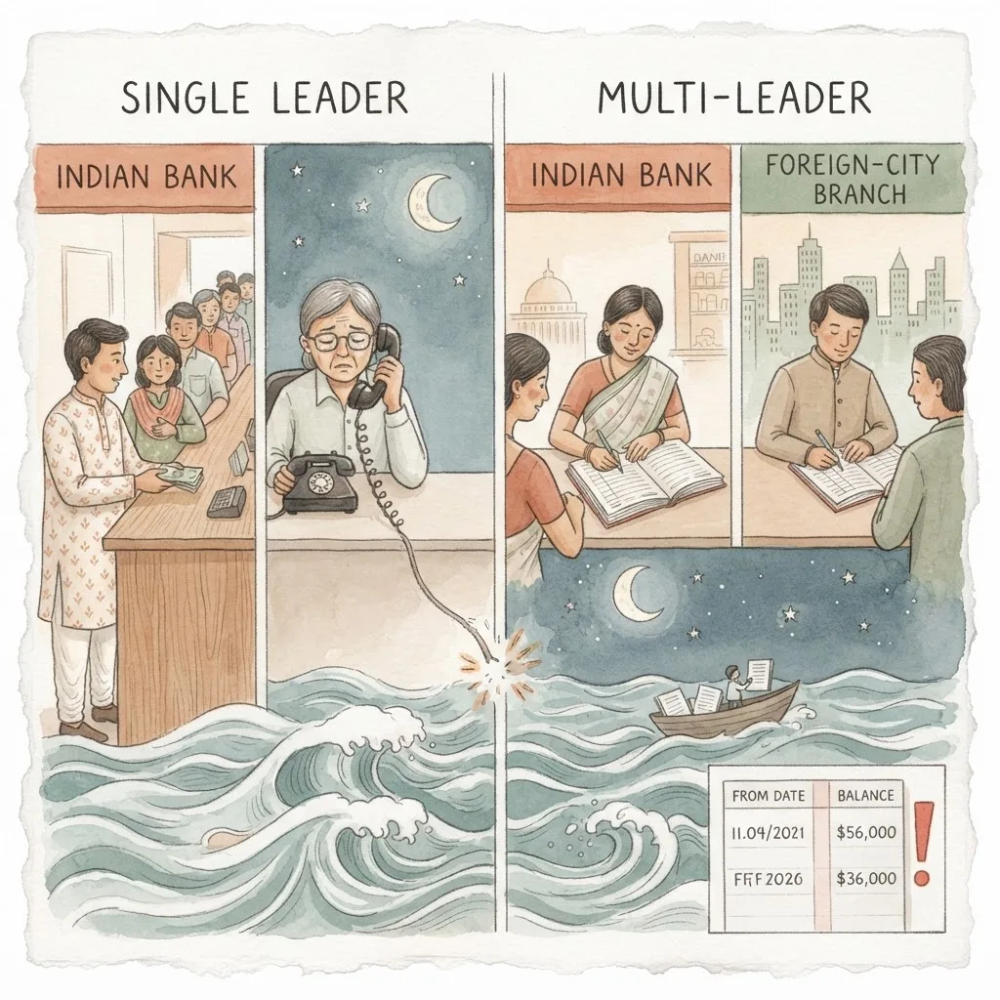
A bank with branches in Mumbai and New York. Single-leader: every deposit, even in Mumbai, must be phoned to New York and approved there; slow, and if the international line is down, Mumbai can't take deposits. Multi-leader: each branch updates its own ledger at once and they exchange ledgers overnight. Where it breaks: if the same account is debited in both branches on the same day, the overnight exchange finds two different balances.
Multi-leader moves the cross-datacenter hop off the user's critical path by making it asynchronous. That's exactly why it can't stop two datacenters from accepting contradictory writes: neither waits to hear from the other.
- Plate 29: leaderless databases (Cassandra, Riak) do multi-datacenter differently.
- Plate 19: conflicts.
Every phone is a tiny datacenter
Clients with offline operation
Multi-leader also fits apps that must keep working without internet. Think of the calendar on your phone, your laptop and other devices. You need to see meetings (reads) and create meetings (writes) at any time, online or not. Changes made offline must sync to the server and your other devices when you're back online.
Here every device has a local database that acts as a leader (it accepts writes), and there is an asynchronous multi-leader replication process (sync) between the replicas on all your devices. The replication lag may be hours or even days, depending on when you get internet.
Architecturally, this is multi-leader between datacenters taken to the extreme: each device is a "datacenter", and the network between them is extremely unreliable. As the rich history of broken calendar-sync implementations shows, multi-leader is tricky to get right. Some tools aim to make it easier; for example CouchDB is designed for this mode [25].
Collaborative editing
Real-time collaborative editing apps let several people edit a document at the same time: Etherpad [26] and Google Docs [27] for text documents and spreadsheets (the algorithm is touched on in plate 21). We don't usually call this database replication, but it is a lot like offline editing. When one user edits, the change is applied instantly to their local replica (the document's state in their browser or app). Then it is asynchronously replicated to the server and to the other editors.
- To guarantee no conflicts, the app must lock the document before someone edits; another user must wait until the first has committed and released the lock. That is equivalent to single-leader replication with transactions on the leader.
- For faster collaboration, make the unit of change very small (e.g. a single keystroke) and avoid locking. Several users can edit at once, but you get all the challenges of multi-leader replication, including conflict resolution.
Try it: phone and laptop calendars, offline
A paper attendance register kept by two teachers on a school trip, one in each bus, with no phone signal in the hills. Each marks students in their own copy. Back at school they merge the registers. Mostly easy; but if one teacher marked Ravi "absent" and the other marked him "present", someone has to decide. Where it breaks: Google Docs merges keystrokes in real time, so the "merge" happens every few milliseconds, not at the end of the trip.
- Plate 21: operational transformation and CRDTs, the algorithms behind co-editing.
- Ch.7: locks and transactions, the "no-conflict" alternative.
Two leaders, one record, two different edits
The biggest problem with multi-leader replication: write conflicts can happen, so conflict resolution is required. Example: a wiki page edited by two users at once (Figure 5-7). User 1 changes the title from A to B; user 2 changes it from A to C at the same time. Each change succeeds on its local leader. When the changes are replicated asynchronously, a conflict is detected [28]. This cannot happen in a single-leader database.
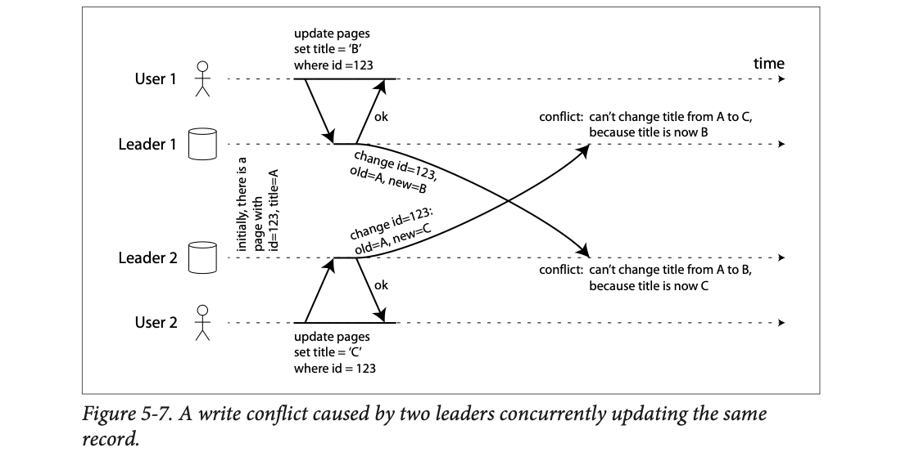
How to read this figure. Initially page id 123 has title A on both leaders (the vertical note between them). User 1's update goes to leader 1, which says "ok" at once and sends "change id=123, old=A, new=B". User 2's update goes to leader 2: "ok", and "change id=123, old=A, new=C". The two change messages cross. When each arrives, its "old=A" no longer matches the local title, so each leader reports a conflict ("can't change title from A to C, because title is now B" and vice versa). Both users were already told "ok".
Synchronous vs asynchronous conflict detection
In a single-leader database, the second writer either blocks and waits for the first write to finish, or its transaction is aborted and the user must retry. In multi-leader, both writes succeed and the conflict is only detected asynchronously, later; by then it may be too late to ask the user to resolve it.
You could make detection synchronous: wait for the write to replicate to all replicas before telling the user it succeeded. But then you lose the main advantage of multi-leader: each replica accepting writes independently. If you want synchronous conflict detection, you might as well use single-leader replication.
Conflict avoidance
The simplest strategy: avoid conflicts. If the app makes sure all writes for a particular record go through the same leader, conflicts can't happen. Many multi-leader implementations handle conflicts poorly, so avoidance is frequently recommended [29].
Example: if users edit their own data, route each user's requests always to the same datacenter and use that datacenter's leader for reading and writing. Different users may have different "home" datacenters (perhaps chosen by geographic nearness), but from one user's point of view it is essentially single-leader.
But sometimes you need to change a record's designated leader: a datacenter has failed and traffic must move, or a user has moved and is now closer to another datacenter. Then avoidance breaks down and you must handle concurrent writes on different leaders.
Try it: home-datacenter routing
A wiki page titled "A" is edited by two users, on two different leaders, at the same time.
Timeline is modelled after Figure 5-7.
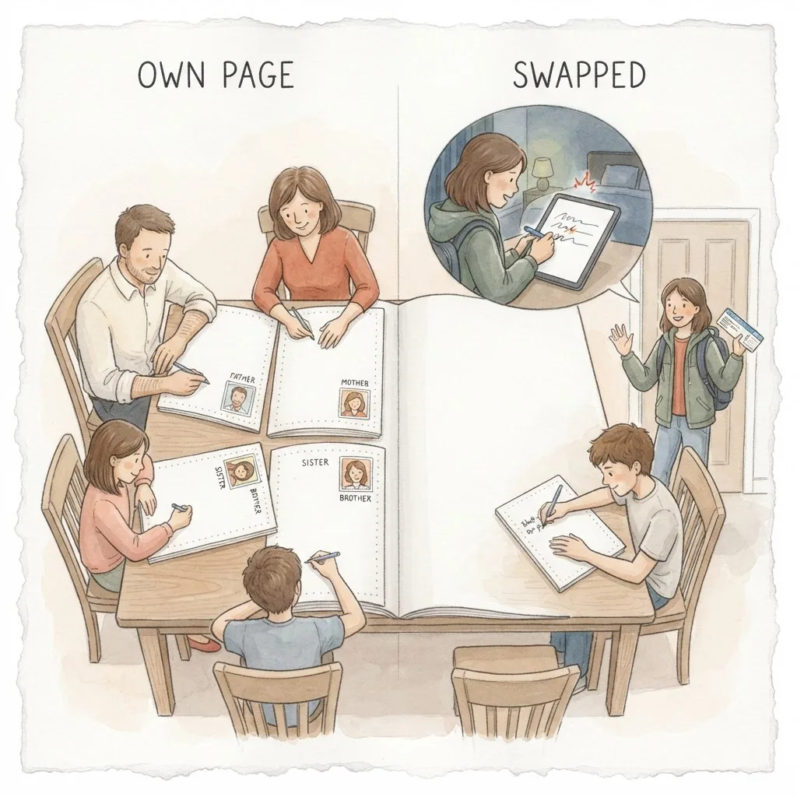
Conflict avoidance is "each family member edits only their own page in the family diary". No fights, as long as nobody swaps pages. If your sister's handwriting stops (she's travelling) and you take over her page for a week, both of you may write on it the same day. Where it breaks: in a database the swap happens automatically during failover, so you don't even know you're both writing.
A conflict needs two things: two writers, and no shared ordering point between them. Single-leader removes the second; conflict avoidance gives each record its own single ordering point (its home leader). Re-homing a record briefly gives it two.
- Plate 20: what to do when a conflict happens anyway.
- Ch.7: blocking and aborting are how single-node transactions handle the same race.
All replicas must end up with the same value
A single-leader database applies writes in a sequential order: if a field is updated several times, the last write decides its final value.
In multi-leader there is no defined order of writes, so it's unclear what the final value should be. In Figure 5-7, leader 1 sees the title change to B then C; leader 2 sees C then B. Neither order is "more correct".
If each replica just applied writes in the order it saw them, the database would end inconsistent: C on leader 1, B on leader 2. Not acceptable: every replication scheme must make the data eventually the same on all replicas. So the database must resolve conflicts in a convergent way: all replicas reach the same final value once all changes are replicated. Ways to do it:
- Give each write a unique ID (a timestamp, a long random number, a UUID (universally unique identifier), or a hash of key and value), pick the highest ID as the winner, throw away the others. With a timestamp, this is last write wins (LWW). Popular, but dangerously prone to data loss [30] (plate 30).
- Give each replica a unique ID; writes from a higher-numbered replica always beat writes from a lower one. Also means data loss.
- Somehow merge the values, e.g. sort alphabetically and concatenate (Figure 5-7's merged title could be "B/C").
- Record the conflict in an explicit data structure that keeps all the information, and write application code that resolves it later (maybe by asking the user).
Try each method on Figure 5-7's conflict
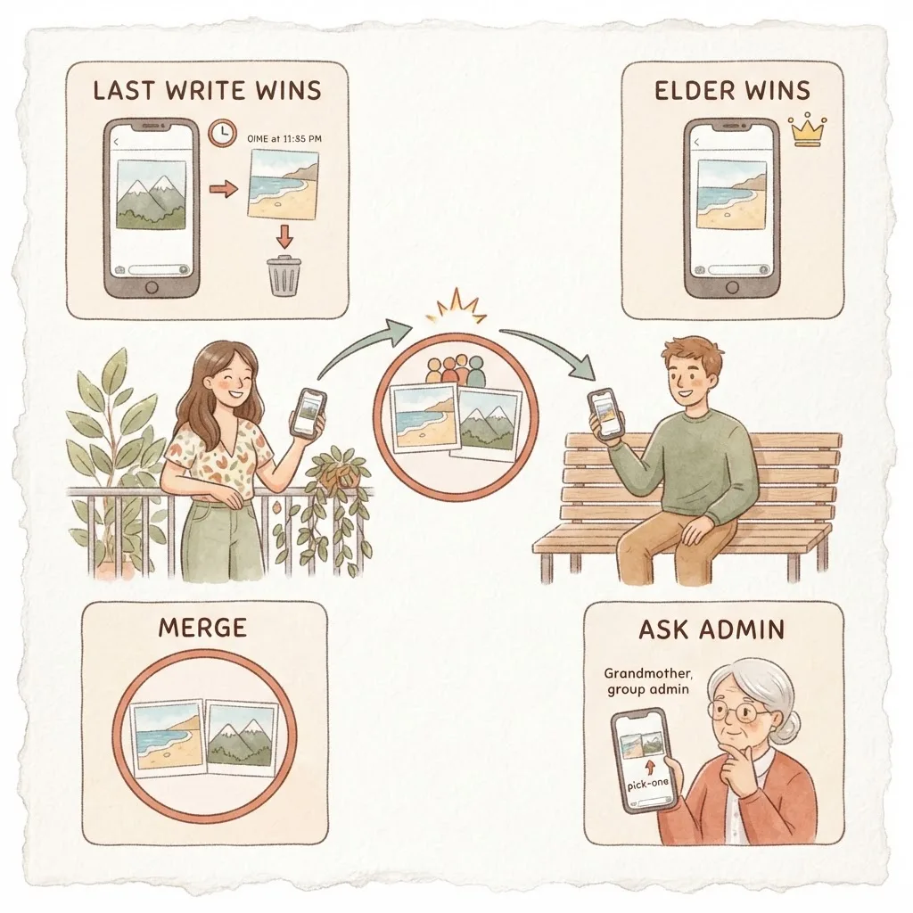
Two cousins update the family group's display picture at the same moment. LWW: "whoever's phone clock says later wins", and the other photo silently disappears. Replica ID: "elder cousin always wins". Merge: a collage of both. Record the conflict: the group admin gets a notification "two new pictures, pick one". Where it breaks: a collage works for photos, but "B/C" as a wiki title is ugly; the right merge depends entirely on what the data means.
Convergence only needs every replica to apply the same deterministic rule to the same set of writes. Any rule that doesn't depend on arrival order works (biggest ID, biggest replica, sorted merge). Whether the result is useful is a separate question, which is why the last two options exist.
- Plate 30: LWW in detail and why timestamps lie.
- Plate 33: siblings in leaderless stores are the "record the conflict" option.
Your code resolves it, or a clever data type does
Custom conflict resolution logic
The right way to resolve a conflict depends on the application, so most multi-leader tools let you write conflict resolution logic in application code. It can run:
Conflict resolution usually works on a single row or document, not on a whole transaction [31]. If a transaction atomically makes several writes (Ch.7), each write is still resolved separately.
Automatic conflict resolution
Resolution rules get complicated fast, and custom code is error-prone. Amazon is a frequently cited example: for a while, the shopping-cart conflict handler kept items added to the cart but not items removed. So customers sometimes saw removed items reappear in their cart [32].
Research on resolving conflicts automatically:
- Conflict-free replicated data types (CRDTs) [33]: a family of data structures (sets, maps, ordered lists, counters, …) that can be edited concurrently by many users and resolve conflicts automatically in sensible ways. Some are implemented in Riak 2.0 [34, 35].
- Mergeable persistent data structures [36]: track history explicitly, like the git version control system, and use a three-way merge (CRDTs use two-way merges).
- Operational transformation (OT) [37]: the algorithm behind collaborative editors like Etherpad and Google Docs. Designed for concurrent editing of an ordered list of items, such as the characters of a text document.
Implementations are still young, but likely to appear in more replicated systems; automatic resolution could make multi-leader sync much simpler for applications.
Try it: a "likes" counter edited on two offline leaders
Beyond the book's detail: this is the classic "G-Counter" CRDT. Each replica only increments its own slot; merging takes the max of each slot; the value is the sum.
What is a conflict?
Some conflicts are obvious: in Figure 5-7 two writes changed the same field of the same record to different values. Others are subtle. Example: a meeting-room booking system that must never let two groups book the same room at the same time. A conflict can arise if two bookings for the same room and time are created on two different leaders. This happens even if the app checks availability before each booking. Each leader's check passes, because neither leader has seen the other booking yet. Solutions have been proposed [38] but are hard to implement. For now, detecting conflicts is something to think about when designing a replicated system; there is no quick ready-made answer.
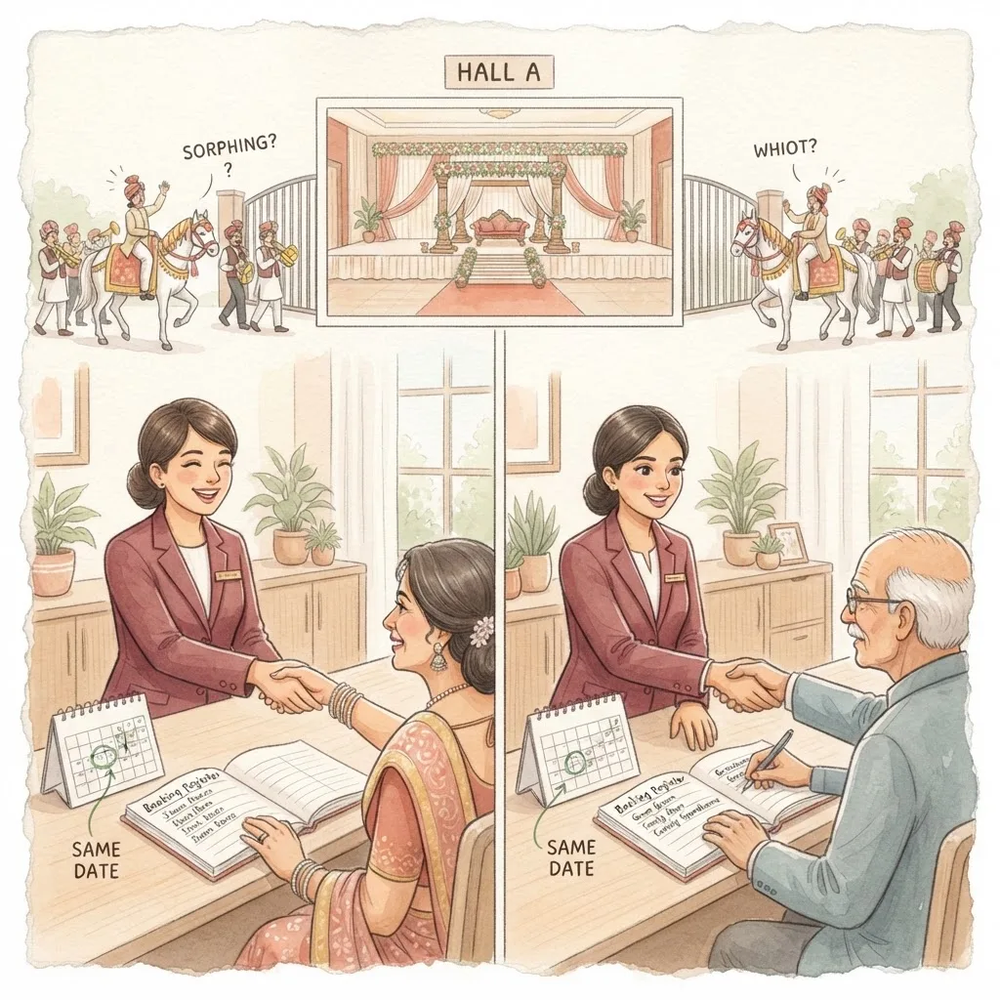
Two receptionists at two branches of a marriage hall chain, both checking the shared register for "Hall A, 15 Dec". Each sees it free, each books it for a different family. Neither write "conflicts" with anything on its own leader. The clash only exists in the meaning: one hall, one day, one family. Where it breaks: no analogy fixes this one; the book says there is no ready-made answer.
CRDTs avoid conflicts by choosing operations that commute: "+1 here" and "+1 there" give the same total in any order, and merging is just combining. A raw value ("likes = 7") doesn't commute, so two replicas setting it differently must throw one away. The trick is to store what happened (increments, adds, removes) rather than only the result.
- Plate 33: Riak's CRDT data types merge siblings automatically.
- Ch.7: the meeting-room problem returns as write skew.
Who forwards writes to whom
A replication topology is the set of communication paths along which writes travel from node to node. With two leaders (Figure 5-7), only one topology makes sense: leader 1 sends all its writes to leader 2 and vice versa. With more than two, there are choices:
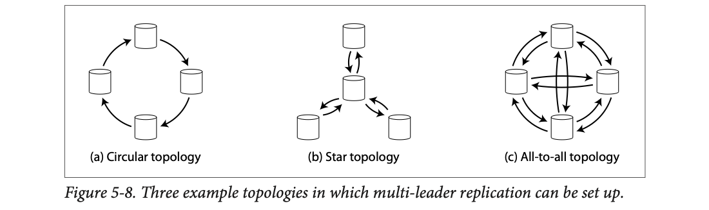
How to read this figure. Each cylinder is a leader; each arrow is a direction writes flow. (a) Circular: each node sends to the next one round the ring. (b) Star: the middle node exchanges with three outer nodes, which only talk to the middle. (c) All-to-all: every node sends to every other node (twelve arrows for four nodes).
- All-to-all (c) is the most general: every leader sends its writes to every other leader.
- Circular: MySQL by default supports only this [29]. Each node receives writes from one node and forwards them (plus its own writes) to one other node.
- Star: one designated root node forwards writes to all others. The star can be generalised to a tree. (Footnote v: not to be confused with a star schema in data warehousing, which describes a data model, not network paths.)
In circular and star topologies, a write may pass through several nodes before reaching all replicas, so nodes must forward changes they receive. To prevent infinite replication loops, each node has a unique identifier, and in the replication log each write is tagged with the identifiers of all nodes it has passed through [39]. A node that receives a change tagged with its own ID ignores it: it has already processed it.
Problem with circular and star: if just one node fails, it can interrupt the flow between other nodes until it's fixed. The topology could be reconfigured around the failed node, but in most deployments that's done manually. Densely connected topologies (all-to-all) tolerate faults better: messages can take different paths, so there's no single point of failure.
Try it: send a write, kill a node
All-to-all has its own issue: some links may be faster than others (for example due to congestion), so some replication messages "overtake" others (Figure 5-9).
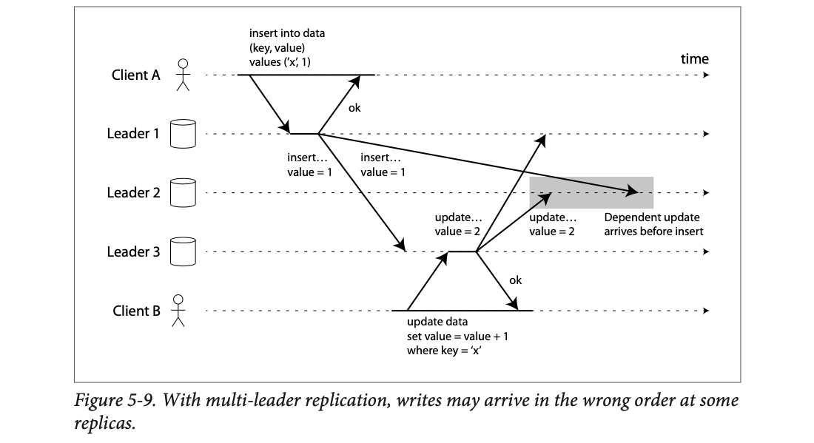
How to read this figure. Client A inserts ('x', 1) on leader 1. Leader 1 forwards "insert… value = 1" to leader 3 (fast) and to leader 2 (a long, slow arrow). Client B, talking to leader 3, runs UPDATE data SET value = value + 1 WHERE key = 'x'; leader 3 sends "update… value = 2" to leaders 1 and 2. The grey box on leader 2's line: the dependent update arrives before the insert, so leader 2 is asked to update a row that doesn't exist yet.
This is a causality problem, like consistent prefix reads (plate 14): the update depends on the insert, so every node must process the insert first. Just attaching a timestamp to every write isn't enough, because clocks can't be trusted to be in sync well enough to order these events at leader 2 (Ch.8). The right tool is version vectors (plate 34).
Conflict detection is poorly implemented in many multi-leader systems. At the time of writing, PostgreSQL BDR does not provide causal ordering of writes [23], and Tungsten Replicator for MySQL doesn't even try to detect conflicts [29]. If you use multi-leader replication, be aware of these issues, read the documentation carefully, and test thoroughly that it really gives the guarantees you think it does.
All-to-all topology with one congested link.
Timeline is modelled after Figure 5-9.
A circular topology of 4 leaders. Watch the tag on write W grow as it travels.
Node names are illustrative.
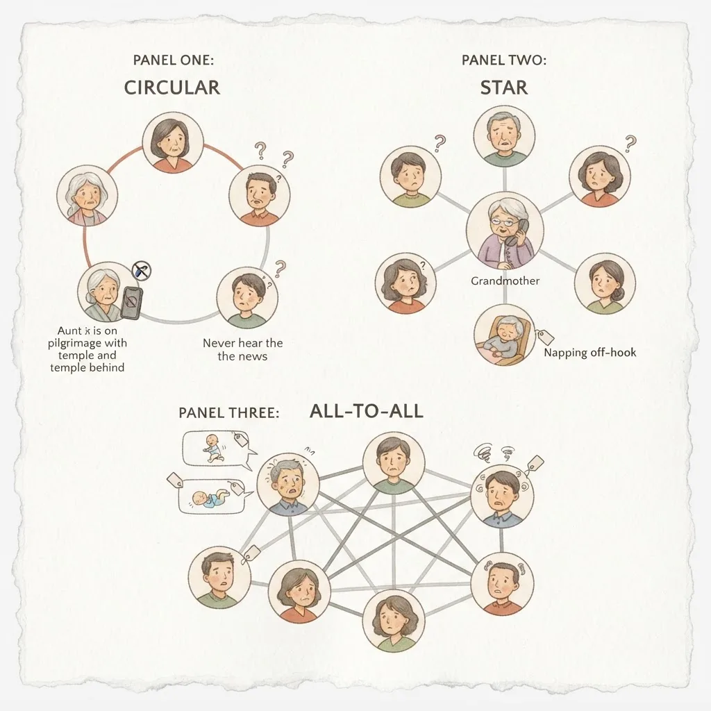
News spreading in a family. Circular: Mummy tells Masi, Masi tells Mama, Mama tells Bua, and if Masi is on a pilgrimage with her phone off, Mama and Bua never hear. Star: everything goes through Nani; if Nani's phone is off, nobody hears anything. All-to-all: everyone calls everyone, so one switched-off phone doesn't matter, but you may hear "the baby is walking now!" before you heard "the baby was born". The ID tags are each relative saying "I already told this one", so the news doesn't loop forever. Where it breaks: relatives can ask "wait, what baby?"; leader 2 just sees an update to a missing row.
Sparse topologies give a natural order (a write reaches node 3 only via node 2) but a fragile path. Dense topologies give robust paths but no order. You can't get "robust and ordered" just from wiring; you need metadata on each write (version vectors) that says what it depends on.
- Plate 14: the same causal-order bug, via partitions.
- Plates 31 and 34: happens-before and version vectors.
- Ch.9: total order broadcast, which gives every node the same order.
No leader: any replica accepts writes
Single-leader and multi-leader share one idea: a client sends a write to one node (a leader), and the database copies it to the others. A leader decides the order of writes, and followers apply them in that order.
Some systems drop the leader entirely and let any replica accept writes directly from clients. Some of the earliest replicated systems were leaderless [1, 40], but the idea was mostly forgotten while relational databases dominated. It became fashionable again after Amazon used it for its in-house Dynamo system [32]. Riak, Cassandra and Voldemort are open-source datastores with leaderless models inspired by Dynamo, so this style is also called Dynamo-style.
Footnote vi: Dynamo is not available outside Amazon. Confusingly, AWS sells a hosted database called DynamoDB that uses a completely different architecture: it is based on single-leader replication.
In some leaderless systems the client sends its writes directly to several replicas; in others a coordinator node does it for the client. Unlike a leader, the coordinator does not enforce an order of writes. That difference has big consequences for how the database is used, as the next plates show.
Three replicas, one of them down. The client needs w = 2 oks.
Timeline and w = 2 are modelled; plate 25 explains w.
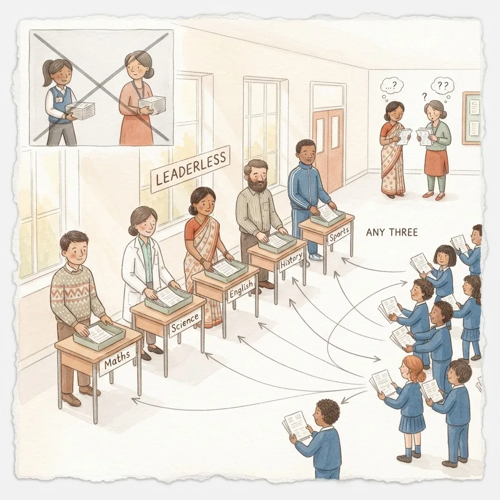
Instead of one class monitor collecting homework and passing copies to the teacher, every student hands their homework to any three of the five teachers present. No single person decides the order. Where it breaks: teachers might each get a different set of submissions; plates 24–28 are about how they reconcile.
- Ch.6: Dynamo-style stores also partition with consistent hashing.
- Reference [32]: the Dynamo paper (DeCandia et al., SOSP 2007).
Write to all, accept 2 of 3; fix stale copies later
Say there are three replicas and one is unavailable (perhaps rebooting for a system update). In a leader-based setup you might need a failover to keep accepting writes. In a leaderless setup, failover doesn't exist. The client (user 1234) sends the write to all three replicas in parallel; the two available ones accept it, the third misses it. If it's enough for two of three to acknowledge, then after two "ok"s the write counts as successful, and the client simply ignores that one replica missed it.
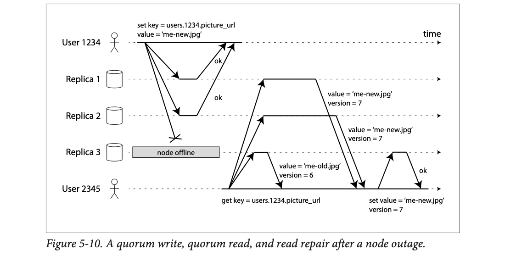
How to read this figure. Left: user 1234 sends set key = users.1234.picture_url, value = 'me-new.jpg' to all three replicas. Replicas 1 and 2 answer "ok"; the arrow to replica 3 ends in a cross, because replica 3 is in its grey "node offline" period. Middle: replica 3 is back, still holding me-old.jpg (version 6). User 2345 reads the key from all three: replicas 1 and 2 return me-new.jpg version 7, replica 3 returns me-old.jpg version 6. Right: the client notices the stale answer and sends set value = 'me-new.jpg', version = 7 to replica 3, which answers "ok". That last step is read repair.
When the unavailable node comes back, it is missing the writes that happened while it was down. Reading from it may return stale (outdated) values. So in leaderless systems, reads are also sent to several nodes in parallel. The client may get different answers: the up-to-date value from one node, a stale one from another. Version numbers tell which value is newer (plate 30).
The scheme must ensure that eventually all data is copied to every replica. How does a returning node catch up? Dynamo-style stores often use two mechanisms:
Not all systems have both; for example Voldemort currently has no anti-entropy process. Without anti-entropy, values that are rarely read may be missing from some replicas and so have reduced durability, because read repair only happens when the application reads the value.
Step through Figure 5-10
Three dabbawalas keep a copy of the delivery list. One was on leave when a customer changed address. Read repair: on the next delivery, the team compares lists, sees his is old, and corrects it on the spot. Anti-entropy: every Sunday the supervisor compares all three lists line by line and fixes differences, including addresses nobody has delivered to recently. Where it breaks: without the Sunday check, a customer who orders once a year can stay wrong on one list forever.
With no leader, there is no single log to replay, so "catching up" must be done by comparing data. Read repair piggy-backs on reads (cheap, but only for hot keys). Anti-entropy scans everything (thorough, but slow and unordered). Beyond the book: Dynamo-style systems typically compare replicas using Merkle trees (hash trees) so they only transfer the parts that differ.
- Plate 25: why "2 of 3" is enough.
- Plate 8: the leader-based way to catch up uses a log position instead.
w + r > n: the write set and the read set must overlap
In Figure 5-10 the write counted as successful on only two of three replicas. What if only one of three accepted it? How far can we push this?
If every successful write is guaranteed to be on at least two of three replicas, then at most one replica is stale. So if we read from at least two, at least one of them is up to date. If the third is down or slow, reads still return an up-to-date value.
In general: with n replicas, every write must be confirmed by w nodes to count as successful, and each read must query at least r nodes. (Example: n = 3, w = 2, r = 2.) As long as w + r > n, we expect an up-to-date value when reading, because at least one of the r nodes must be up to date. Reads and writes that obey these r and w values are quorum reads and writes [40]. Think of r and w as the minimum number of votes needed for a read or write to be valid.
Footnote vii: this is sometimes called a strict quorum, to contrast with sloppy quorums (plate 28).
In Dynamo-style databases n, w and r are usually configurable. A common choice: n odd (typically 3 or 5) and w = r = (n + 1) / 2 rounded up. But you can vary them. A workload with few writes and many reads may use w = n and r = 1: reads are faster, but one failed node makes all writes fail.
Book's side note: a cluster may have more than n nodes, but any given value is stored on only n of them. That lets the dataset be partitioned and be bigger than one node (Ch.6).
The quorum condition lets the system tolerate unavailable nodes:
- If w < n, writes still work with a node unavailable.
- If r < n, reads still work with a node unavailable.
- With n = 3, w = 2, r = 2: tolerate one unavailable node.
- With n = 5, w = 3, r = 3: tolerate two unavailable nodes (Figure 5-11).
- Normally reads and writes are always sent to all n replicas in parallel; w and r only decide how many we wait for, i.e. how many of the n must report success before we call it successful.
If fewer than w or r nodes are available, writes or reads return an error. A node can be unavailable for many reasons: down (crashed, powered off), an error running the operation (can't write because the disk is full), a network break between client and node, and so on. We only care whether it returned a successful response; we don't need to tell kinds of fault apart.
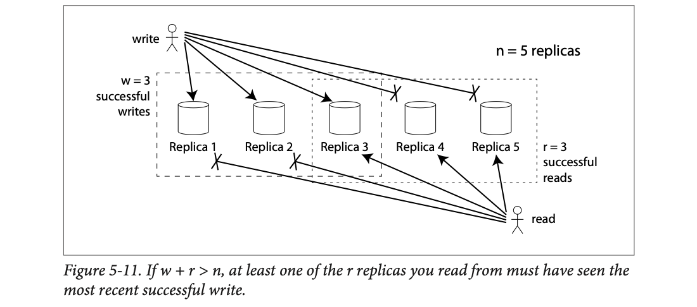
How to read this figure. n = 5 replicas in a row. The writer (top left) sends to all five; the arrows to replicas 4 and 5 are crossed out, so the write succeeds on replicas 1, 2, 3 (the dashed box "w = 3 successful writes"). The reader (bottom right) also sends to all five; its arrows to replicas 1 and 2 are crossed out, so it gets answers from 3, 4, 5 ("r = 3 successful reads"). The two dashed boxes overlap on replica 3: that's the guaranteed up-to-date node. 3 + 3 = 6 > 5, so they must share at least one.
Quorum simulator (click a replica to take it down)
Modelled: in the simulator a write lands on exactly w random live replicas and a read hears back from r random live replicas. Real systems usually deliver the write to more than w eventually. Stale-read percentages are this model's, not the book's.
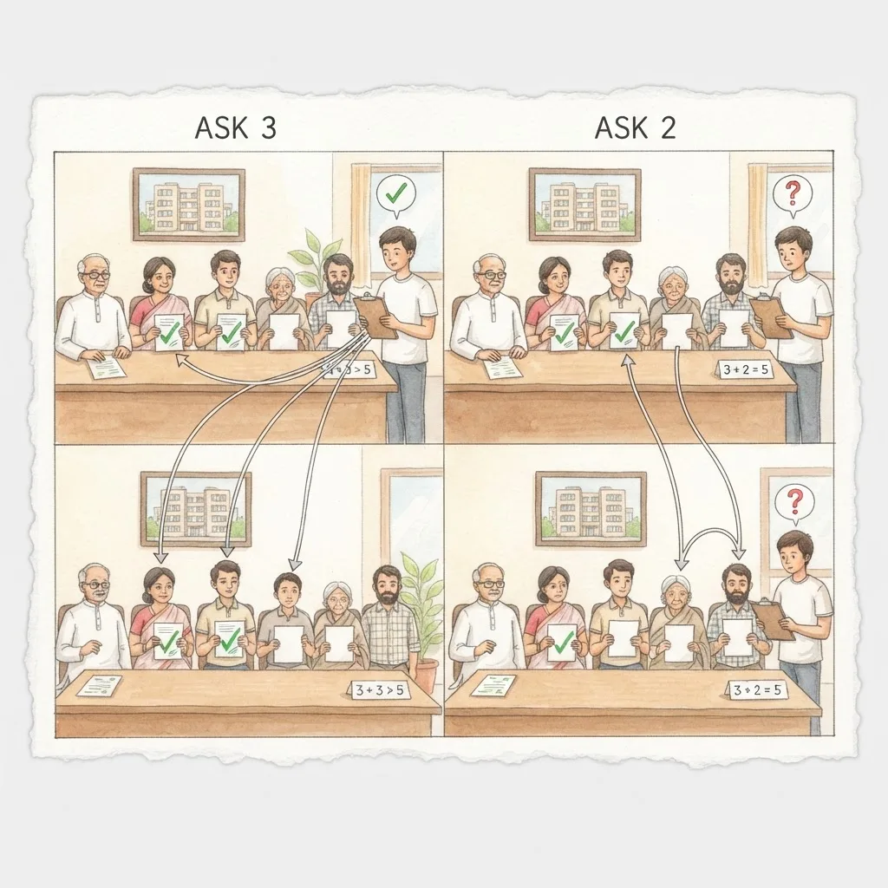
A housing society committee of 5. A decision is "passed" when 3 members sign it (w = 3). Later, to check what was decided, you ask any 3 members (r = 3). Since 3 + 3 = 6 is more than 5, at least one person you asked must have signed the decision. Ask only 2 (r = 2, 3 + 2 = 5) and you might ask exactly the two who never saw it. Where it breaks: committee members don't forget; database nodes can lose data, receive writes late, or be replaced, which plate 26 covers.
It's the pigeonhole principle. A write set of size w and a read set of size r drawn from n nodes can only be disjoint if w + r ≤ n. Make them too big to fit side by side and they must share a node. The version number on that shared node tells the reader which answer is newest.
n = 5, w = 3, r = 3: writes survive 2 failed nodes (need 3 of 5), reads survive 2 failed nodes. n = 5, w = 5, r = 1: reads need only 1 node (fast), writes fail if any node is down. n = 3, w = 1, r = 1: very available and fast, but 1 + 1 = 2 ≤ 3, so a read can easily miss the latest write.
- Plate 26: why w + r > n is still not a guarantee.
- Ch.9: "Linearizability and quorums".
Quorums reduce stale reads; they don't eliminate them
With w + r > n you can generally expect every read to return the latest value for a key, because the write set and read set overlap (Figure 5-11). But there are edge cases.
You can also choose w + r ≤ n. Reads and writes still go to all n nodes, but fewer successful responses are needed. You're more likely to read stale values (your read may miss the node with the latest value). On the upside you get lower latency and higher availability: if a network break makes many replicas unreachable, there's a better chance you can keep reading and writing. Only when the reachable replicas drop below w (or r) does the database become unavailable for writes (or reads).
Even with w + r > n, stale values can come back. It depends on the implementation, but possible cases:
So although quorums appear to guarantee the latest value, in practice it's not so simple. Dynamo-style databases are generally optimised for use cases that can tolerate eventual consistency. w and r let you adjust the probability of stale reads, but it's wise not to take them as absolute guarantees.
In particular, you usually don't get the guarantees from plates 12–14 (reading your writes, monotonic reads, consistent prefix reads), so those anomalies can occur. Stronger guarantees generally need transactions or consensus (Ch.7, Ch.9).
Three replicas with a key price. n = 3, w = 2, r = 2. Each step is one edge case from the book.
Values, timestamps and stand-in nodes are modelled.
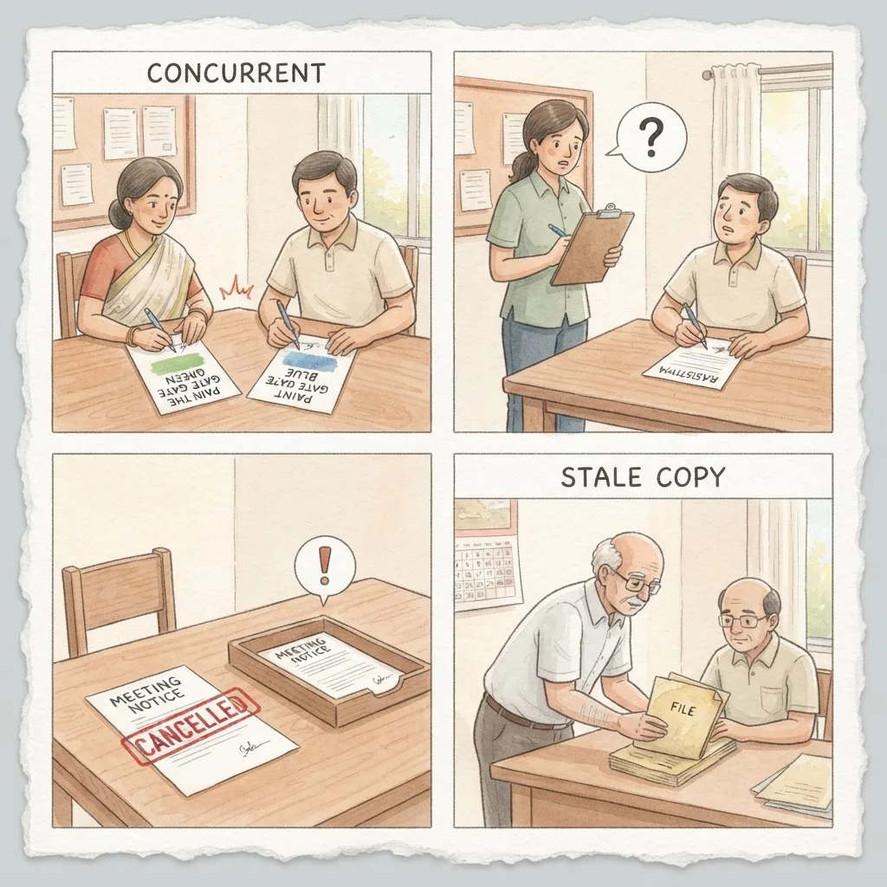
Asking 3 of 5 committee members works when everyone signs in one meeting. It fails when two members sign at the same time different versions (concurrent writes), when you ask while someone is still signing (write during read), when a signature is torn out because the meeting was "cancelled" but nobody erased the ones already signed (partly failed write), or when a member who lost their file copies an old one from a neighbour (restore from stale). Where it breaks: a committee can just meet again; a database is answering thousands of reads per second meanwhile.
The overlap argument assumes a write is an instant, all-or-nothing event on a fixed set of n nodes. In reality a write takes time, can half-succeed, may land on stand-in nodes, and may race another write. Each edge case breaks one of those assumptions.
- Plate 28 (case 1), plate 30 (case 2), Ch.9 "Linearizability and quorums" (case 6).
Quantify "eventually"
Operationally, you should monitor whether your databases return up-to-date results. Even if the app tolerates stale reads, you need to know the health of replication. If it falls far behind, it should alert you so you can find the cause (a network problem, an overloaded node).
In leader-based replication, the database usually exposes replication lag metrics you can feed to monitoring. This works because writes are applied on leader and followers in the same order, and each node has a position in the replication log (how many writes it has applied). Leader's position − follower's position = lag.
In leaderless systems there is no fixed order of writes, so monitoring is harder. And if the database only uses read repair (no anti-entropy), there is no limit to how old a value can be: a rarely read value on a stale replica may be ancient.
There is research on measuring staleness in leaderless databases and predicting the expected percentage of stale reads from n, w and r [43] (PBS, "probabilistically bounded staleness"). It's not yet common practice, but staleness measurements should be in the standard set of database metrics. Eventual consistency is deliberately vague, but for operability you need to be able to quantify "eventual".
Lag from log positions
The subtraction is the book's method. Turning it into seconds with a write rate is an approximation (modelled). Beyond the book: PostgreSQL exposes this as pg_stat_replication (sent/replay LSNs), MySQL as Seconds_Behind_Source.
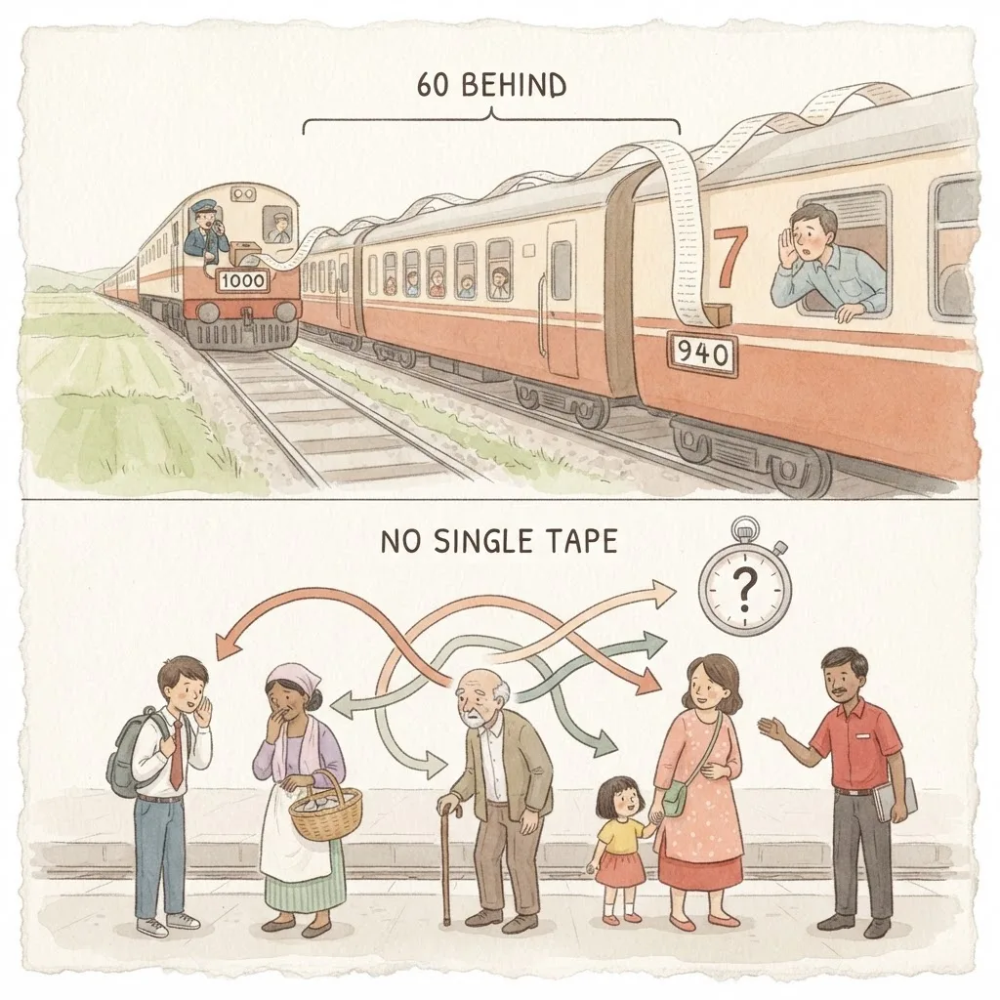
Two train coaches reading a running announcement tape: if the engine has announced 1,000 stations and coach 7 has heard 940, coach 7 is 60 behind. With a leaderless system there is no single tape, just people telling each other things in any order, so "how far behind is coach 7?" has no clean answer. Where it breaks: a tape has one speed; real replication lag jumps around from milliseconds to minutes, so one measurement is only a snapshot.
Leader-based: the leader is at log position 1,250,400; follower 1 reports 1,250,380 and follower 2 reports 1,247,900. Lag = 20 writes and 2,500 writes. At about 500 writes/s, follower 2 is roughly 5 s behind: worth an alert, and worth checking its network or load. Leaderless: there is no single position to subtract. If only read repair runs (no anti-entropy), a key that nobody has read for a month could still hold a month-old value on one replica, and no metric would tell you.
- Plate 11: the replication lag you're measuring.
- Ch.1: percentiles and monitoring.
Sleep on the neighbour's couch until you find your keys
Correctly configured quorums tolerate failed nodes without failover, and tolerate slow nodes too, because requests return after w or r responses instead of waiting for all n. That makes leaderless databases attractive for high availability and low latency when occasional stale reads are acceptable.
But quorums (as described so far) are not as fault-tolerant as they could be. A network break can easily cut a client off from many database nodes. Those nodes are alive, and other clients may reach them, but to the cut-off client they might as well be dead. Probably fewer than w or r reachable nodes remain, so the client can't reach a quorum.
In a large cluster (many more than n nodes), the client can probably reach some nodes during the break, just not the ones it needs for that value. Designers face a trade-off:
- Return errors for all requests that can't reach a quorum of w or r nodes?
- Or accept writes anyway, writing them to nodes that are reachable but aren't among the n nodes where the value normally lives?
The second is a sloppy quorum [32]: reads and writes still need w and r successful responses, but those may come from nodes outside the designated n "home" nodes. (Kleppmann's analogy: locked out of your house, you knock on the neighbour's door and ask to stay on their couch for a while.)
When the network is fixed, writes a node accepted on behalf of another are sent to the right home nodes. This is hinted handoff. (Once you find your house keys, the neighbour politely asks you to get off the couch and go home.)
Sloppy quorums are especially useful for write availability: as long as any w nodes are available, writes are accepted. But even with w + r > n you can't be sure to read the latest value, because it may sit temporarily on nodes outside n [42]. So a sloppy quorum isn't really a quorum in the traditional sense: it's only an assurance of durability (the data is stored on w nodes somewhere). There's no guarantee a read of r nodes sees it until hinted handoff completes.
Sloppy quorums are optional in all common Dynamo implementations: enabled by default in Riak, disabled by default in Cassandra and Voldemort [41, 44, 45].
Step through: n = 3 home nodes (A, B, C) in a 5-node cluster, w = 2, r = 2
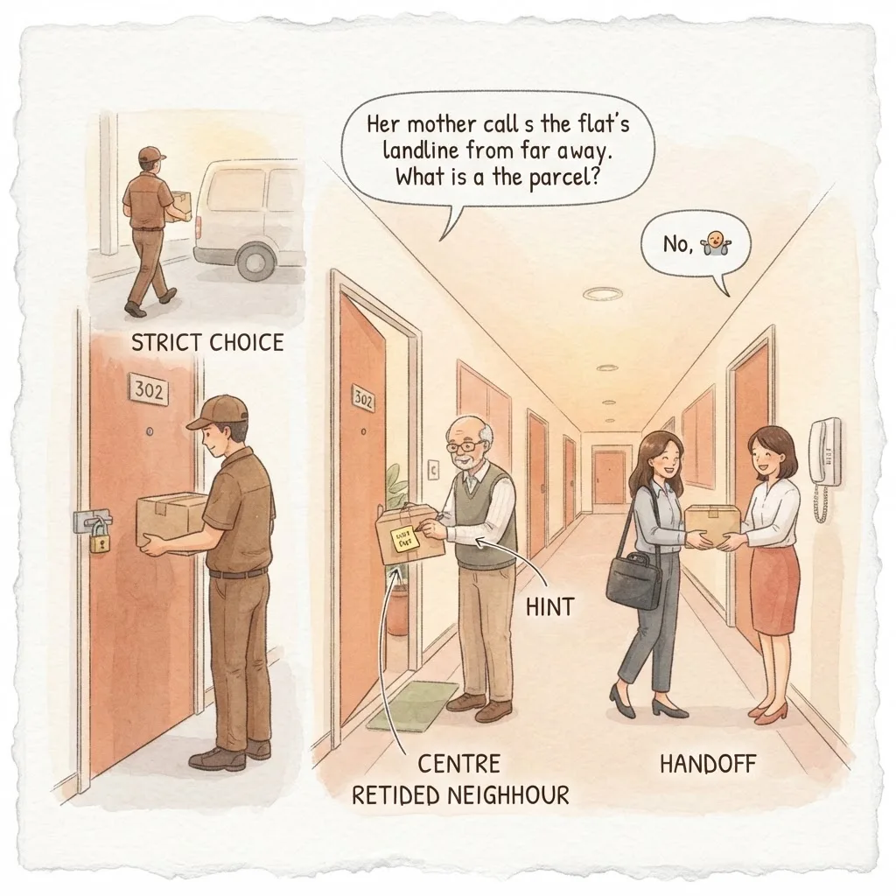
Your courier arrives while you're out and the gate is locked. Strict quorum: the courier refuses and the parcel goes back (an error). Sloppy quorum: the neighbour signs for it with a note "for flat 302" (a hint). When you come home, the neighbour hands it over (hinted handoff). Meanwhile, if your mother calls your flat asking "did the parcel come?", the answer is "no", because it's next door. Where it breaks: the neighbour might also be unreachable later; durability depends on the stand-in node surviving until handoff.
The quorum overlap argument depends on both sides counting the same n nodes. A sloppy quorum lets the write side count different nodes, so the overlap is no longer forced. You trade read freshness for write availability.
- Plate 26, edge case 1.
- Ch.8: network partitions.
Count replicas per datacenter, wait only for the local ones
Plate 17 used multi-leader for cross-datacenter replication. Leaderless replication also suits multi-datacenter operation, because it is designed to tolerate conflicting concurrent writes, network interruptions and latency spikes.
Illustration of the Cassandra/Voldemort style described above (n = 6 with 3 per datacenter is an example, not the book's number).
The same write, shown as time passes.
n = 6 with 3 per datacenter and all latencies are modelled, not the book's numbers.
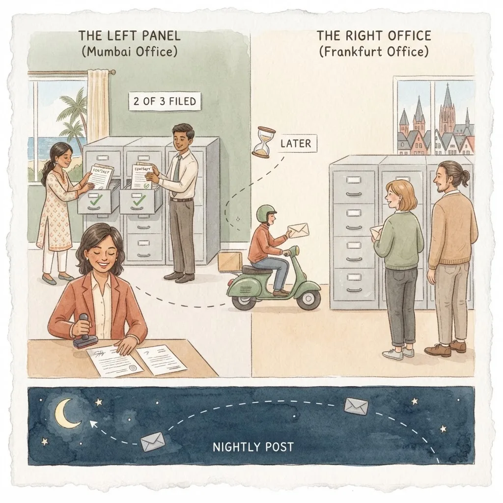
A company with offices in Mumbai and Frankfurt keeps 3 copies of each contract in each office. A Mumbai manager signs off once 2 Mumbai copies are filed; the courier to Frankfurt goes later. Riak's style is two separate filing departments that post updates to each other every night. Where it breaks: a manager would notice if Frankfurt changed the same contract; leaderless databases only find such clashes later, as concurrent writes (plate 30).
- Plate 17: multi-leader across datacenters.
- Beyond the book: Cassandra exposes this as consistency levels such as
LOCAL_QUORUMvsEACH_QUORUM.
Writes arrive in different orders on different nodes
Dynamo-style databases let several clients write the same key concurrently, so conflicts happen even with strict quorums. It's like multi-leader (plate 19), but here conflicts can also arise during read repair or hinted handoff.
The problem: events can arrive in a different order at different nodes, due to variable network delays and partial failures. Figure 5-12: clients A and B write key X at the same time in a three-node store:
- Node 1 receives A's write, but never receives B's, due to a transient outage.
- Node 2 receives A's write first, then B's.
- Node 3 receives B's write first, then A's.
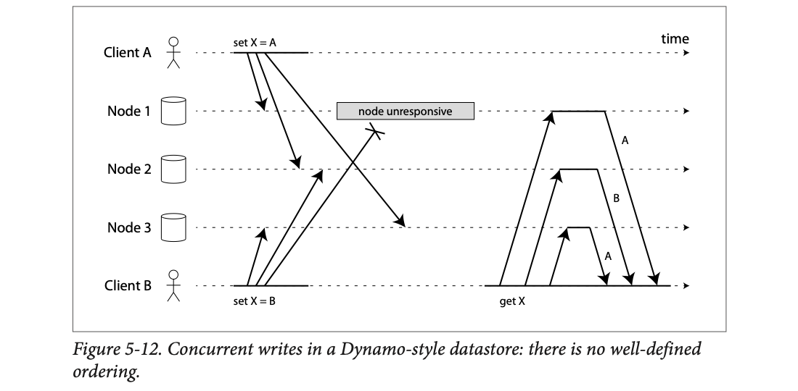
How to read this figure. (The line above the frame is the last bullet of the book's list, captured with the figure.) Left half: client A's three arrows ("set X = A") go down to nodes 1, 2, 3. Client B's three arrows ("set X = B") go up; the one to node 1 is crossed out next to "node unresponsive". Look at arrival order on each node's line: node 2 gets A then B; node 3 gets B then A. Right half: a later "get X" returns A from node 1, B from node 2, A from node 3: the replicas disagree permanently.
If each node just overwrote the value whenever it got a write, they'd become permanently inconsistent, as the final get shows: node 2 thinks X = B, the others think X = A. To be eventually consistent, replicas must converge to the same value. You might hope databases handle this automatically, but most implementations are quite poor: if you want to avoid losing data, you, the application developer, must know a lot about your database's conflict handling.
Last write wins (discarding concurrent writes)
One way to converge: each replica stores only the most "recent" value and lets "older" ones be overwritten and discarded. If there's an unambiguous way to decide which write is more recent, and every write eventually reaches every replica, the replicas converge.
The quotes around "recent" are deliberate: the idea is misleading. In Figure 5-12, neither client knew about the other when it wrote, so it's not clear which happened first. In fact it doesn't make sense to say either was "first": the writes are concurrent, so their order is undefined.
Even without a natural order, we can force an arbitrary one: attach a timestamp to each write, keep the biggest as "most recent", discard the rest. This is last write wins (LWW), the only conflict resolution method in Cassandra [48], and optional in Riak [30].
LWW achieves convergence at the cost of durability: with several concurrent writes to one key, even if all were reported successful to their clients (written to w replicas), only one survives and the others are silently discarded. LWW may even drop writes that are not concurrent (see "Timestamps for ordering events", Ch.8).
In some situations, such as caching, lost writes may be acceptable. If losing data is not acceptable, LWW is a poor choice. The only safe way to use a database with LWW is to make sure a key is written only once and then treated as immutable, so there are no concurrent updates to the same key. For example, a recommended way to use Cassandra is to use a UUID as the key, giving each write a unique key [48].
Replay Figure 5-12 with two rules
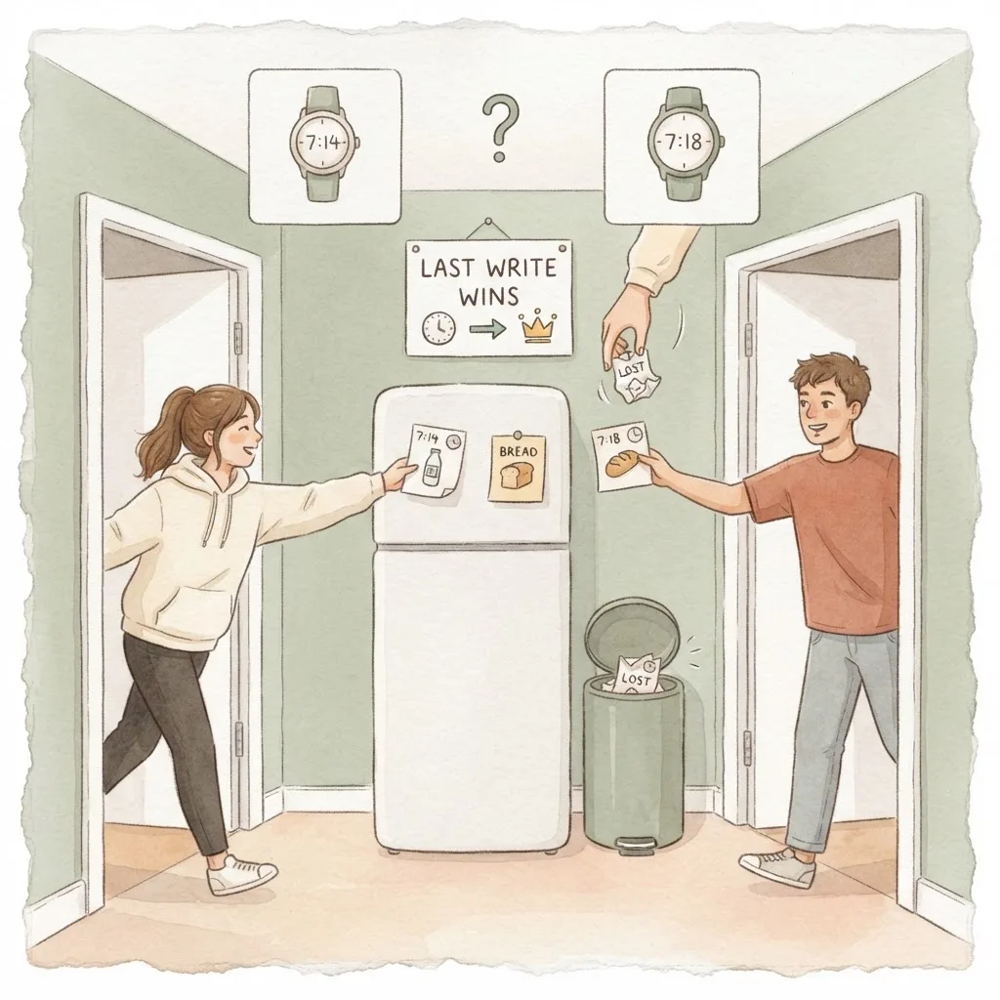
Two flatmates each stick a note on the fridge, at the same time, from different doors: "Buy milk" and "Buy bread". Rule: keep only the note with the later time written on it; throw the other in the bin. The fridge is tidy and everyone agrees what it says, but one errand is lost forever, and nobody was told. If each person's watch is a few minutes off, the "later" note may not even be the later one. Where it breaks: flatmates would just keep both notes; LWW is built to keep one.
LWW converts "concurrent" into "ordered" by inventing an order from timestamps. Convergence needs only some deterministic order, and LWW provides one; but the order is arbitrary, so the loser's data vanishes. Using unique keys sidesteps it: if no two writes share a key, there is nothing to choose between.
Cassandra-style LWW, n = 3, w = 2. Client A writes X = "A" with timestamp 10:00:00.120; client B writes X = "B" with timestamp 10:00:00.095 (B's clock runs a little behind). Both writes reach 2 replicas, so both clients get "success". Later every replica compares timestamps and keeps "A" (bigger number). B's write is silently thrown away: no error, no sibling, nothing in the logs. If B's clock had been 30 ms ahead instead, "B" would win. So the winner depends on clock drift, not on what the users meant. The safe pattern: write each key only once, e.g. key = a fresh UUID per event, so there is never a second write to fight with.
- Plate 20: LWW as a multi-leader conflict strategy.
- Ch.8: clock skew can make LWW drop even non-concurrent writes.
Concurrent = neither knew about the other
How do we decide if two operations are concurrent? Two examples:
- In Figure 5-9, the two writes are not concurrent: A's insert happens before B's increment, because the value B increments is the value A inserted. B's operation builds on A's, so it must have happened later. We say B is causally dependent on A.
- In Figure 5-12, the two writes are concurrent: when each client started, it didn't know another client was writing the same key. There is no causal dependency.
Definition: an operation A happens before operation B if B knows about A, depends on A, or builds upon A in some way. Two operations are concurrent if neither happens before the other, i.e. neither knows about the other [49].
So for any two operations A and B there are three possibilities: A happened before B, B happened before A, or A and B are concurrent. We need an algorithm to tell which. If one happened before the other, the later one should overwrite the earlier; if they're concurrent, there's a conflict to resolve.
You might think "concurrent" means "at the same time". But whether they literally overlap in time doesn't matter. Because clocks in distributed systems are unreliable, it is hard to tell if two things literally happened at the same moment (Ch.8).
For concurrency, exact time doesn't matter: two operations are concurrent if they are unaware of each other, whatever the physical time. People connect this to the special theory of relativity [49]: information can't travel faster than light, so two events far apart can't affect each other if the time between them is shorter than light needs to cross the distance.
In computers, two operations can be concurrent even when light would have had time. If the network was slow or broken, two operations can happen some time apart and still be concurrent. The network problem stopped one from knowing about the other.
Quick check: before, after, or concurrent?
Two clients, one database. First a causal pair of writes, then a concurrent pair.
Timeline is modelled.
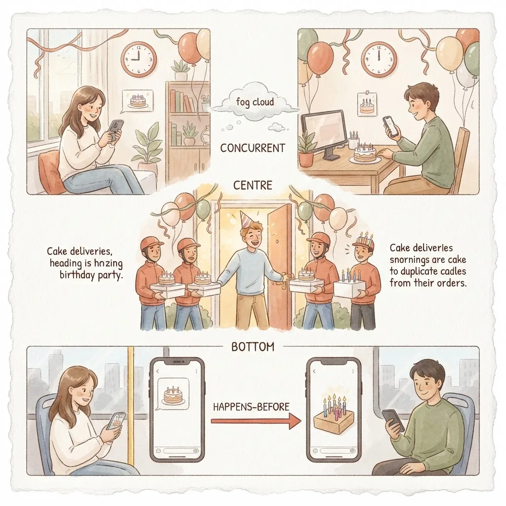
Two friends in different cities both order you a birthday cake on Swiggy without telling each other: concurrent, even if one order was an hour earlier. If friend 2 saw friend 1's "I ordered a cake!" message and then ordered candles, the candles happen after the cake, even if they were ordered just a second later. It's about knowing, not about the clock. Where it breaks: humans can tell from context; a database needs metadata (version numbers) carried with each write to know who knew what.
Happens-before is a partial order: some pairs are ordered, some aren't. A single-leader log forces a total order (every pair ordered, sometimes arbitrarily). Leaderless and multi-leader systems must instead discover the partial order, and keep both values when two writes aren't ordered.
- Reference [49]: Lamport, "Time, Clocks, and the Ordering of Events in a Distributed System" (1978).
- Ch.9: causality, Lamport timestamps.
The shopping cart: version numbers find concurrency
An algorithm that tells whether two operations are concurrent or one happened before the other. Start simple: a database with one replica; then generalise to leaderless with many replicas (plate 34).
Figure 5-13: two clients concurrently adding items to one shopping cart. Initially the cart is empty. Between them they make five writes:
- Client 1 adds milk. First write to that key, so the server stores it and assigns version 1. It echoes the value back with the version number.
- Client 2 adds eggs, not knowing client 1 added milk (it thinks eggs are the only item). The server assigns version 2 to eggs and stores eggs and milk as two separate values. It returns both values with version 2.
- Client 1, unaware of client 2, adds flour; it thinks the cart is now [milk, flour]. It sends that with version 1 (from the server's last reply). The server can tell [milk, flour] supersedes [milk] but is concurrent with [eggs]. It assigns version 3 to [milk, flour], overwrites version 1 [milk], keeps version 2 [eggs], and returns both remaining values.
- Meanwhile client 2 adds ham, unaware of the flour. It had received [milk] and [eggs] last time, so it merges them and adds ham: [eggs, milk, ham], sent with version 2. The server sees version 2 overwrites [eggs] but is concurrent with [milk, flour]. Remaining: [milk, flour] at version 3 and [eggs, milk, ham] at version 4.
- Finally client 1 adds bacon. It had received [milk, flour] and [eggs] at version 3, merges them, adds bacon, and sends [milk, flour, eggs, bacon] with version 3. That overwrites [milk, flour] ([eggs] was already overwritten in step 4) but is concurrent with [eggs, milk, ham], so the server keeps those two concurrent values (the new one is version 5).
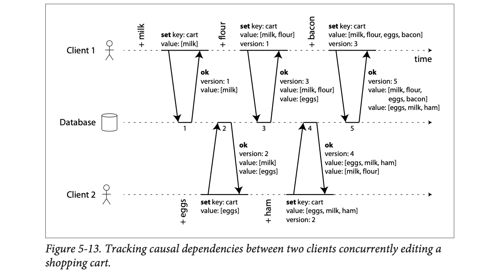
How to read this figure. Client 1 on top, the database in the middle, client 2 at the bottom. Each "set" box shows what the client sends (value + the version it last saw); the bold "ok" box shows what comes back (new version + all values still alive). The numbers 1–5 on the database line are the order the server processed the writes. Note client 2's first write ("+ eggs") carries no version, because it never read before.
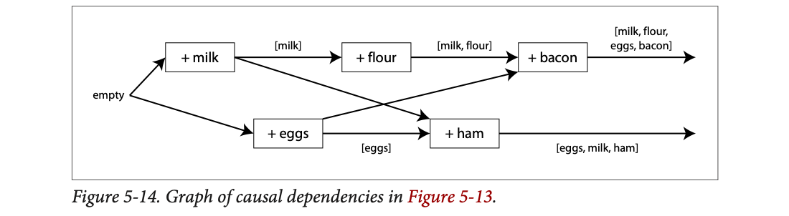
How to read this figure. Each box is an operation; an arrow means "the later operation knew about the earlier one". From "empty", two branches start (+milk, +eggs): concurrent. +ham has arrows from both +milk and +eggs (client 2 had seen both). +bacon has arrows from +flour and +eggs. There is no arrow between +bacon and +ham, so the two final values are concurrent siblings.
In this example the clients are never fully up to date with the server, because there's always another operation going on concurrently. But old versions do get overwritten eventually, and no writes are lost.
The server can tell whether two operations are concurrent just from the version numbers; it doesn't need to interpret the value (so the value can be any data structure). The algorithm:
- The server keeps a version number for every key, increments it on every write to that key, and stores the new version with the value written.
- When a client reads a key, the server returns all values that haven't been overwritten, plus the latest version number. A client must read a key before writing.
- When a client writes a key, it must include the version number from its prior read, and must merge together all values it received in that read. (A write's response can be like a read, returning all current values, so writes can be chained as in the example.)
- When the server receives a write with a version number, it can overwrite all values with that version number or below, because they've been merged into the new value. But it must keep all values with a higher version number, because they're concurrent with the incoming write.
A write that includes the version from a prior read says which previous state it is based on. A write without a version number is concurrent with all other writes: it overwrites nothing and is just returned as one of the values on later reads.
Step through Figure 5-13 on the server
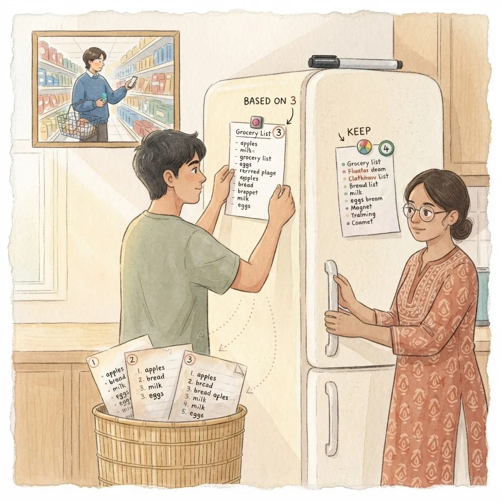
A shared grocery list on the fridge with a page number. Rule: when you rewrite the list, write "based on page 3" at the top. Anyone tidying the fridge throws away pages 3 and below (they're included in yours), but keeps page 4 if it exists, because whoever wrote page 4 didn't see your changes. Where it breaks: on a fridge you'd just combine the pages; the database needs the clients to do the combining.
The version a client sends is a compact summary of "everything I have seen". Anything at or below it was seen, so it is safely replaced; anything above it wasn't, so it's concurrent and must be kept. The server never needs clocks or to understand the cart.
- Plate 33: the client-side merge.
- Plate 34: one version number per replica.
Siblings, unions, and tombstones
The algorithm guarantees no data is silently dropped, but clients must do extra work: when operations happened concurrently, clients must clean up by merging the concurrent values. Riak calls these concurrent values siblings.
Merging siblings is essentially the same problem as conflict resolution in multi-leader replication (plate 19). A simple approach is to pick one value by version number or timestamp (LWW), but that loses data. So you may need something smarter in application code.
For a shopping cart, a reasonable approach is to take the union. In Figure 5-14 the two final siblings are [milk, flour, eggs, bacon] and [eggs, milk, ham]; milk and eggs appear in both even though each was written only once. The merged value could be [milk, flour, eggs, bacon, ham], without duplicates.
But if people can also remove items, the union may be wrong: if you merge two sibling carts and an item was removed in only one of them, the removed item reappears in the union [32]. To prevent this, a removed item can't simply be deleted; the system must leave a marker with an appropriate version number saying the item was removed, for use when merging siblings. Such a deletion marker is a tombstone.
Merging siblings in application code is complex and error-prone, so there are efforts to design data structures that merge automatically (plate 21). For example, Riak's datatype support uses a family of data structures called CRDTs [33, 34, 50] that can merge siblings sensibly, including preserving deletions.
Try it: merge two sibling carts
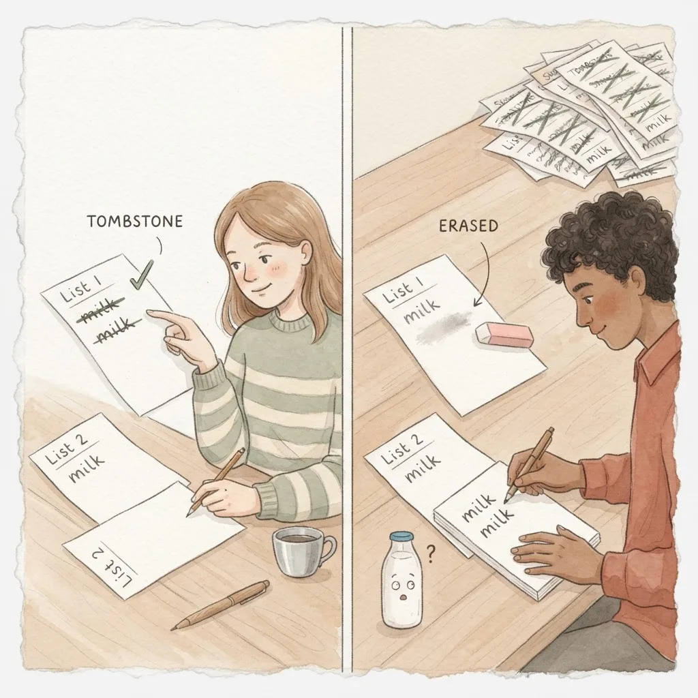
A paper shopping list where people cross items out instead of erasing them. When two people's lists are combined, the crossed-out "milk" on one list tells you "someone deliberately removed this", so you don't add it back from the other list. An erased item leaves no trace, and the other list brings it back. Where it breaks: crossed-out items pile up; real systems must eventually clean up old tombstones, which is tricky in its own right.
Union is a natural merge for "add" operations because adds commute. Removes don't survive a plain union because "absent" carries no information. A tombstone turns the remove into a positive fact ("milk removed at version 6") that the merge can see. This is the same reason Amazon's cart once resurrected removed items.
The cart starts as [milk, eggs]. On phone, you remove eggs. At the same time, on laptop (which never saw the removal), you add bread. The server now holds two siblings: [milk] and [milk, eggs, bread]. Plain union: [milk] ∪ [milk, eggs, bread] = [milk, eggs, bread], so the eggs you removed come back (the Amazon bug). With a tombstone: the phone's sibling is stored as [milk, eggs✝(removed, v3)]. The merge sees "eggs was removed at a version the laptop's copy doesn't know about" and drops it: result [milk, bread]. The ✝ marker is what remembers a deletion that a plain list would forget.
- Plate 21: Amazon's cart bug and CRDTs.
- Ch.3: tombstones in log-structured storage play the same role during compaction.
One version number per replica
Figure 5-13 used a single replica. What changes with several replicas and no leader?
A single version number isn't enough when several replicas accept writes concurrently. Instead we need a version number per replica as well as per key. Each replica increments its own version number when it processes a write, and also tracks the version numbers it has seen from every other replica. With that it can work out which values to overwrite and which to keep as siblings.
The collection of version numbers from all replicas is a version vector [51]. Several variants exist; the most interesting is probably the dotted version vector [52], used in Riak 2.0 [53, 54]. The book doesn't go into details; it works much like the cart example.
Like the version numbers in Figure 5-13, version vectors are sent from replicas to clients when values are read, and must be sent back when a value is written. That lets the database tell overwrites from concurrent writes. As before, the application may need to merge siblings. The version vector makes it safe to read from one replica and write back to another: this may create siblings, but no data is lost as long as siblings are merged correctly.
A version vector is sometimes called a vector clock. The difference is subtle; one way to see it: version vectors are for client–server systems, vector clocks for peer-to-peer systems. See references [52, 55, 56].
Compare two version vectors (3 replicas: A, B, C)
Beyond the book's detail: the standard comparison rule is "X happened before Y if every entry of X ≤ the same entry of Y and at least one is smaller; if neither is ≤ the other, they're concurrent". The merged vector after resolving is the entry-wise maximum.
Replicas A and B start at [A:0, B:0]. A client writes "milk" via A → A's vector [1, 0]. Another client, who hasn't read anything, writes "eggs" via B → [0, 1]. Neither vector is ≤ the other, so the two writes are concurrent → siblings. A client reads both (vector merged to [1, 1]), merges to [milk, eggs], and writes back via B → [1, 2]. [1, 0] ≤ [1, 2] and [0, 1] ≤ [1, 2], so both old siblings are safely overwritten.
Three replicas A, B and C. Each vector has one counter per replica.
Items and vectors are a modelled example in the style of the book's cart.
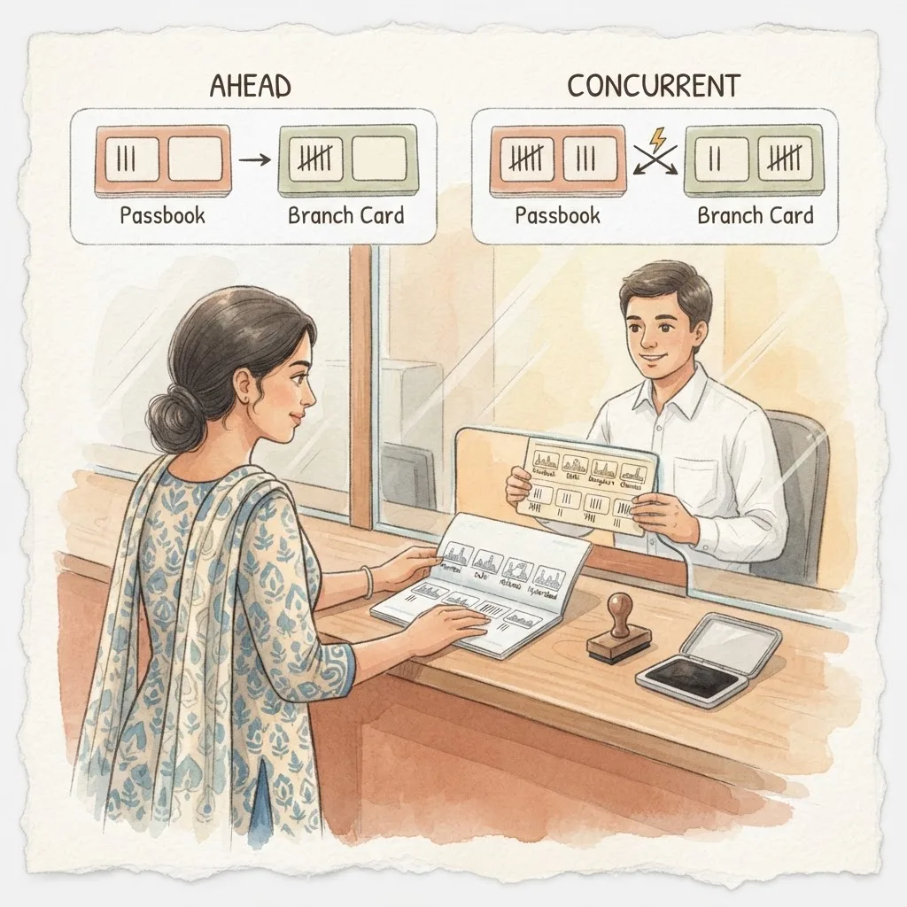
Each branch of a bank keeps a stamp counter. A passbook carries a row of stamps, one per branch: "Mumbai 3, Pune 1". If your passbook shows Mumbai 3, Pune 1 and the branch's record shows Mumbai 3, Pune 2, the branch knows it's ahead of you. If yours says Mumbai 4, Pune 1 and theirs says Mumbai 3, Pune 2, each has seen something the other hasn't: concurrent. Where it breaks: with thousands of clients writing, the vector should be per replica (few), not per client (many), which is why version vectors are per replica.
One counter can only say "how many writes the server has seen in total". When several replicas count independently, you need one counter per replica so you can ask "has this write seen everything replica B had done?" separately for each replica. Entry-wise comparison answers exactly the happens-before question.
- Plate 22: version vectors are the fix for out-of-order writes in multi-leader topologies.
- Ch.9: Lamport timestamps (a single counter that gives a total order, but cannot detect concurrency).
The chapter in plain words
Replication means keeping a copy of the same data on several machines. It serves several purposes:
- High availability: keep running even when one machine, several machines, or a whole datacenter goes down.
- Disconnected operation: let an application keep working when the network is interrupted.
- Latency: put data close to users so they interact with it faster.
- Scalability: handle more reads than one machine could, by reading from replicas.
The goal sounds simple, but replication is remarkably tricky. It needs careful thought about concurrency and everything that can go wrong. At a minimum: unavailable nodes and network interruptions (not even counting sneakier faults like silent data corruption from software bugs).
Each has pros and cons. Single-leader is popular because it's fairly easy to understand and has no conflict resolution to worry about. Multi-leader and leaderless can be more robust to faulty nodes, network interruptions and latency spikes, at the cost of being harder to reason about and giving only very weak consistency guarantees.
Replication can be synchronous or asynchronous, which hugely affects behaviour under faults. Async can be fast when everything is smooth, but figure out what happens when lag grows and servers fail: if a leader fails and you promote an async follower, recently committed data may be lost.
Strange effects of replication lag, and consistency models that help decide how an app should behave:
- Read-after-write consistency: users always see data they submitted themselves.
- Monotonic reads: after seeing data at one point in time, a user never later sees data from an earlier point.
- Consistent prefix reads: users see data in a state that makes causal sense, e.g. a question before its reply.
Finally, concurrency is built into multi-leader and leaderless replication: they allow concurrent writes, so conflicts can happen. The chapter showed an algorithm to decide whether one operation happened before another or whether they were concurrent, and touched on resolving conflicts by merging concurrent updates. Next chapter: the counterpart of replication, splitting a large dataset into partitions.
Key terms
| Term | Meaning | Plate |
|---|---|---|
| Shared-memory / shared-disk / shared-nothing | One big machine / machines sharing disks / independent nodes coordinating over a network | 2, 3 |
| NUMA | Non-uniform memory access: some memory is closer to some CPUs | 2 |
| Replication / partitioning (sharding) | Copies of the same data / splitting data into subsets on different nodes | 4 |
| Replica, leader (master, primary), follower (slave, read replica, hot standby) | A node with a copy; the one that takes writes; the ones that copy it | 6 |
| Replication log / change stream | The ordered stream of changes from leader to followers | 6 |
| Synchronous / asynchronous / semi-synchronous | Leader waits for follower / doesn't wait / waits for exactly one follower | 7 |
| Snapshot, log sequence number, binlog coordinates, caught up | Consistent copy at a log position; Postgres / MySQL names for that position; follower has applied the backlog | 8 |
| Failover, split brain, fencing / STONITH | Promoting a follower; two nodes think they're leader; forcibly shutting one down | 9 |
| Statement-based, WAL shipping, logical (row-based) log, trigger-based | Four ways to encode the replication log | 10 |
| Change data capture | Feeding a database's logical log to external systems | 10 |
| Read-scaling architecture | Many async followers to serve reads | 11 |
| Eventual consistency, replication lag | Replicas converge if writes stop; how far a follower is behind | 11 |
| Read-after-write (read-your-writes), cross-device | You always see your own writes, on any device | 12 |
| Monotonic reads | No going back in time across successive reads | 13 |
| Consistent prefix reads | Writes seen in the order they happened | 14 |
| Multi-leader (master–master, active/active) | Several nodes accept writes, each a follower of the others | 16 |
| Write conflict, conflict avoidance, convergent resolution | Same data changed on two leaders; route a record to one leader; all replicas reach the same value | 19, 20 |
| Last write wins (LWW) | Keep the write with the biggest timestamp, discard the rest | 20, 30 |
| CRDT, mergeable persistent data structure, operational transformation | Automatic conflict resolution approaches | 21 |
| Replication topology (circular, star, all-to-all) | The paths writes travel between leaders | 22 |
| Leaderless / Dynamo-style, coordinator | Any replica accepts writes; node that fans out requests without ordering them | 23 |
| Read repair, anti-entropy | Fix stale replicas during reads / in a background process | 24 |
| n, w, r, quorum (strict) | Replicas, write acks needed, read responses needed; w + r > n | 25 |
| Sloppy quorum, hinted handoff | Accept writes on non-home nodes; later send them home | 28 |
| Happens-before, concurrent, causally dependent | B knew about A; neither knew the other; B built on A | 31 |
| Siblings, tombstone | Concurrent values kept side by side; a marker that an item was deleted | 33 |
| Version vector (vector clock), dotted version vector | One version number per replica, to detect concurrency | 34 |
Where you meet this in real systems
| System | What the book says it does |
|---|---|
| PostgreSQL | Built-in leader-based replication since 9.0; WAL shipping; "hot standby" = replica that serves reads; position = log sequence number. BDR adds multi-leader (no causal ordering at the time of writing). Bucardo: trigger-based. |
| MySQL | Leader-based; statement-based before 5.1, now switches to row-based (binlog) on non-determinism; binlog coordinates; innobackupex for snapshots; circular topology by default for multi-leader; Tungsten Replicator (doesn't detect conflicts). GitHub incident: promoted stale follower reused auto-increment keys, leaking data via Redis. |
| Oracle | Data Guard (leader-based), WAL shipping; GoldenGate (log-reading, multi-leader); Databus (trigger-based). |
| SQL Server | AlwaysOn Availability Groups (leader-based). |
| MongoDB, RethinkDB, Espresso | Non-relational databases using leader-based replication. |
| Kafka, RabbitMQ | Message brokers using leader-based replication (RabbitMQ's highly available queues). |
| DRBD | Replicated block device, similar to leader-based replication. |
| VoltDB | Statement-based replication made safe by requiring deterministic transactions. |
| CouchDB | Designed for offline multi-leader sync; resolves conflicts on read. |
| Etherpad, Google Docs | Collaborative editing with operational transformation. |
| Amazon Dynamo | In-house leaderless store that revived the approach; its shopping cart once resurrected deleted items. (DynamoDB is a different, single-leader design.) |
| Riak | Dynamo-style; sloppy quorums on by default; siblings; CRDT datatypes (Riak 2.0); dotted version vectors; LWW optional; multi-DC via async cluster replication. |
| Cassandra | Dynamo-style; sloppy quorums off by default; LWW is the only conflict method, so use UUID keys; multi-DC by waiting for a local quorum. |
| Voldemort | Dynamo-style; no anti-entropy process; sloppy quorums off by default; multi-DC like Cassandra. |
- PostgreSQL 10+ has built-in logical replication (publications/subscriptions), so cross-version replication and zero-downtime major upgrades are now common.
- Kafka tracks an "in-sync replica" set, a generalisation of semi-synchronous replication.
- Collaborative editors increasingly use CRDTs (e.g. Yjs, Automerge) as well as OT.
Questions (tap to reveal)
1. Why is "copy the data files" not enough to set up a new follower, and what is done instead?
Writes keep happening while you copy, so different files reflect different moments. Instead: take a consistent snapshot tied to an exact log position (LSN, the log sequence number / binlog coordinates), copy it, then request and apply all changes since that position until caught up.
2. In a semi-synchronous setup, the synchronous follower crashes. What happens to writes?
One of the asynchronous followers is made synchronous, so writes keep flowing and there are still two up-to-date copies (leader + new sync follower). If all followers were synchronous, writes would block.
3. Fully async replication; the leader confirms a write, then dies before replicating it. A follower is promoted. Then the old leader comes back. What usually happens to that write?
It is usually discarded, violating the client's durability expectation. If other systems (like Redis in the GitHub incident) used that data, discarding it can cause inconsistency.
4. What breaks with statement-based replication of INSERT INTO t VALUES (RAND())?
Each replica computes its own random number, so replicas diverge. Fixes: leader substitutes the value when logging, or use row-based (logical) replication.
5. Why does WAL shipping often force downtime for database upgrades, while logical replication doesn't?
The WAL describes bytes in disk blocks, tied to one storage format; leader and followers must run the same version. A logical log describes rows and can stay backward-compatible, so you upgrade followers first and fail over.
6. A user edits their profile, reloads, and sees the old version. Name the guarantee, and two ways to provide it.
Read-after-write (read-your-writes). Read the user's own profile from the leader; or read from the leader for one minute after an update; or remember the last-write log position and only read from replicas caught up to it.
7. What would happen if each user's reads were routed by hash(user_id) and that replica died?
The user must be re-routed to another replica, which may be behind the old one, so monotonic reads can be violated at that moment unless the system checks the new replica is caught up.
8. Why is consistent prefix reads mainly a problem in partitioned databases?
Each partition has its own independent log; there's no global order. A reader can see one partition's newer state and another's older state, e.g. an answer without its question.
9. n = 5. Which (w, r) pairs guarantee overlap? How many failed nodes can (3, 3) tolerate?
Any with w + r > 5, e.g. (3,3), (4,2), (5,1), (2,4). With w = r = 3, both reads and writes still work with 2 nodes down.
10. Give three reasons a read can be stale even though w + r > n.
Any of: sloppy quorum (write landed outside the n home nodes); concurrent writes resolved by LWW losing one; a write concurrent with the read; a partly failed write not rolled back; a node restored from a stale replica; unlucky timing (linearizability edge cases).
11. Two clients write the same key in Cassandra at about the same time, both get "success". What happens?
LWW keeps the one with the larger timestamp and silently discards the other. To be safe, write each key only once (e.g. UUID keys).
12. In the cart algorithm, the server holds siblings at versions 3 and 4. A client writes with version 3. What is kept?
Everything at version ≤ 3 is overwritten (merged into the new value). Version 4 is kept as a concurrent sibling. The new value gets version 5. (This is exactly step 5 of Figure 5-13.)
13. Why does a plain union of sibling carts resurrect deleted items, and what fixes it?
A deletion leaves no trace, so the other sibling still has the item and the union brings it back. Fix: tombstones (deletion markers with a version) or CRDTs that preserve deletions.
The chapter's reading list
Part II introduction references [1]–[4]
- Ulrich Drepper: "What Every Programmer Should Know About Memory," 2007.
- Ben Stopford: "Shared Nothing vs. Shared Disk Architectures: An Independent View," 2009.
- Michael Stonebraker: "The Case for Shared Nothing," IEEE Database Engineering Bulletin, 1986.
- Frank McSherry, Michael Isard, Derek G Murray: "Scalability! But at what COST?," HotOS, 2015.
Chapter 5 references [1]–[56]
- Lindsay, Selinger, Galtieri et al.: "Notes on Distributed Databases," IBM Research, 1979.
- "Oracle Active Data Guard Real-Time Data Protection and Availability," Oracle, 2013.
- "AlwaysOn Availability Groups," SQL Server Books Online, Microsoft, 2012.
- Qiao, Surlaker, Das et al.: "On Brewing Fresh Espresso: LinkedIn's Distributed Data Serving Platform," SIGMOD, 2013.
- Jun Rao: "Intra-cluster Replication for Apache Kafka," ApacheCon, 2013.
- "Highly Available Queues," RabbitMQ documentation, Pivotal, 2014.
- Yoshinori Matsunobu: "Semi-Synchronous Replication at Facebook," 2014.
- "Percona Xtrabackup – Documentation," Percona, 2014.
- Jesse Newland: "GitHub availability this week," github.com, 2012.
- Mark Imbriaco: "Downtime last Saturday," github.com, 2012.
- John Hugg: "'All in' with determinism for performance and testing in distributed systems," Strange Loop, 2015.
- Amit Kapila: "WAL Internals Of PostgreSQL," PGCon, 2012.
- MySQL Internals Manual, Oracle, 2014.
- Sharma, Ajoux, Ang et al.: "Wormhole: Reliable Pub-Sub to Support Geo-replicated Internet Services," NSDI, 2015.
- "Oracle GoldenGate 12c: Real-time access to real-time information," Oracle, 2013.
- Das, Botev, Surlaker et al.: "All Aboard the Databus!," SoCC, 2012.
- Greg Sabino Mullane: "Version 5 of Bucardo database replication system," 2014.
- Werner Vogels: "Eventually Consistent," ACM Queue, 2008.
- Douglas B Terry: "Replicated Data Consistency Explained Through Baseball," Microsoft Research, 2011.
- Terry, Demers, Petersen et al.: "Session Guarantees for Weakly Consistent Replicated Data," PDIS, 1994.
- Terry Pratchett: Reaper Man: A Discworld Novel, 1991.
- "Tungsten Replicator," Continuent, 2014.
- "BDR 0.10.0 Documentation," PostgreSQL Global Development Group, 2015.
- Robert Hodges: "If You *Must* Deploy Multi-Master Replication, Read This First," 2012.
- Anderson, Lehnardt, Slater: CouchDB: The Definitive Guide, O'Reilly, 2010.
- AppJet: "Etherpad and EasySync Technical Manual," 2011.
- John Day-Richter: "What's different about the new Google Docs: Making collaboration fast," 2010.
- Frazer Clement: "Eventual Consistency – detecting conflicts," 2011.
- Robert Hodges: "State of the Art for MySQL Multi-Master Replication," Percona Live, 2013.
- John Daily: "Clocks Are Bad, Or, Welcome to the Wonderful World of Distributed Systems," basho.com, 2013.
- Riley Berton: "Is Bi-Directional Replication (BDR) in Postgres Transactional?," 2016.
- DeCandia, Hastorun, Jampani et al.: "Dynamo: Amazon's Highly Available Key-Value Store," SOSP, 2007.
- Shapiro, Preguiça, Baquero, Zawirski: "A comprehensive study of Convergent and Commutative Replicated Data Types," INRIA, 2011.
- Sam Elliott: "CRDTs: An UPDATE (or maybe just a PUT)," RICON West, 2013.
- Russell Brown: "A Bluffers Guide to CRDTs in Riak," 2013.
- Farinier, Gazagnaire, Madhavapeddy: "Mergeable persistent data structures," JFLA, 2015.
- Chengzheng Sun, Clarence Ellis: "Operational Transformation in Real-Time Group Editors," CSCW, 1998.
- Terry, Theimer, Petersen et al.: "Managing update conflicts in Bayou, a weakly connected replicated storage system," SOSP, 1995.
- Lars Hofhansl: "HBASE-7709: Infinite loop possible in Master/Master replication," 2013.
- David K Gifford: "Weighted Voting for Replicated Data," SOSP, 1979.
- Joseph Blomstedt: "Re: Absolute consistency," riak-users mailing list, 2012.
- Joseph Blomstedt: "Bringing Consistency to Riak," RICON West, 2012.
- Bailis, Venkataraman, Franklin, Hellerstein, Stoica: "Quantifying eventual consistency with PBS," CACM, 2014.
- Jonathan Ellis: "Modern hinted handoff," datastax.com, 2012.
- "Project Voldemort wiki," github.com, 2013.
- "Apache Cassandra 2.0 Documentation," DataStax, 2014.
- "Riak Enterprise: Multi-Datacenter Replication," Basho, 2014.
- Jonathan Ellis: "Why Cassandra doesn't need vector clocks," datastax.com, 2013.
- Leslie Lamport: "Time, Clocks, and the Ordering of Events in a Distributed System," CACM, 1978.
- Joel Jacobson: "Riak 2.0: Data Types," 2014.
- Parker, Popek, Rudisin et al.: "Detection of Mutual Inconsistency in Distributed Systems," IEEE TSE, 1983.
- Preguiça, Baquero, Almeida, Fonte, Gonçalves: "Dotted Version Vectors: Logical Clocks for Optimistic Replication," 2010.
- Sean Cribbs: "A brief history of time in Riak," RICON, 2014.
- Russell Brown: "Vector Clocks Revisited Part 2: Dotted Version Vectors," basho.com, 2015.
- Carlos Baquero: "Version Vectors are not Vector Clocks," 2011.
- Reinhard Schwarz, Friedemann Mattern: "Detecting Causal Relationships in Distributed Computations: In Search of the Holy Grail," Distributed Computing, 1994.